Science
Table of Contents
1 牡蛎给芝加哥带来了海
1954 年，生物学家 F.A.Brown 从康涅狄格的海边挖下来了一批牡蛎（Ostrea virginica），放进了千里之外芝加哥一个地下室里的水族箱。他是一个生物节律研究者，他知道牡蛎会随着潮水的涨落而起居。
搬入新居的头两个星期，什么都没有改变。牡蛎们依然按照它们正常的规律生活：它们时而缩回去，时而张开壳，捕捉海水里的浮游生物，喂养自己，一切遵循着遥远的康涅狄格海岸的潮起潮落。
但是接下来的两星期里，发生了一件难以解释的事情。它们依然像潮水一样起伏，但是它们的高潮期行为却不再和康涅狄格的潮水吻合了。不是佛罗里达，不是加利福尼亚，不是多佛，不符合科学所知的任何一张潮汐表。
经过反复计算，Brown 意识到一点：这是芝加哥的涨潮时间。
但是芝加哥没有海。
这些牡蛎生活在钢筋混凝土的地下室里，生活在玻璃箱的人造海水中。但它们知道海的存在，它们的祖先已经在海边生活了几亿年；它们可以离开海，海却不会离开它们。Brown 猜测，也许牡蛎是感知到了气压的变化，从中反推出了潮汐应来的时间、自己应有的节律。没有任何一只牡蛎是有意识地在做这一切——但在某种深层的意义上，它们正想象着这样的一片海，一片不存在于地球上任何角落的海，在那里会有潮起潮落，而它们会随着海的节律而开合。
芝加哥没有海，但牡蛎带来了海。
F. A. Brown, Jr., Persistent activity rhythms in the oyster. The American journal of physiology, 1954.
2 丧心病狂的核动力窨井盖
1956 年，位于美国新墨西哥州的洛斯阿拉莫斯国家实验室正在准备进行核武器的小规模地下引爆实验。最初的设想挺简单的：挖个足够深的洞，差不多 150 米深，1.2 米直径，把核弹放到洞底，点燃引线，然后撒丫子跑。一开始这个洞是没有封口的，因为他们觉得这井道这么深，即使不封上也不会有什么泄露出来。
到 1957 年年中，洛斯阿拉莫斯国家实验室的科学家 Robert Brownlee 准备尝试把洞口封上进行试验。在这次代号为「 帕斯卡-A」的试验中，一个超过 10 厘米厚的实心钢块被牢牢地焊在了试验井的洞口处。这块窨井盖跟下面的核试验之间隔着 150 米的空气，由于距离还是很远，所以即使窨井盖被掀飞，似乎也不会飞多远。除此之外，在试验井的底部，核弹的上方还有一个 1.5 米厚，重达数吨的混凝土罩子。
值得一提的是，「 帕斯卡-A」中使用的是一个试验弹，配置有良好的保险措施，即使万一「 走火」，也只会触发其中很小的一个部分，不会连锁释放所有当量。因此大家都觉得这只会是一次小规模的试爆。
太天真了。
于是在 1957 年 8 月 27 日晚 10:35 分，在新墨西哥州核试验场 U3d 分区，核弹被引爆了。但是这次计划中的小当量试爆的威力却超过了预期整整 5 个数量级：原本只打算释放 1 千克的当量，结果却释放了超过 300 吨 TNT 炸药的能量。核爆在一瞬间气化了上方几吨的混凝土，冲击波夹带着这几吨的极端高热高压物质，以超高速沿着井道上升。这时的试验井实际上成为了一个 150 米长、1.2 米口径的巨型炮膛。炮膛内部是几百吨当量核弹释放的全部能量和混凝土罩的全部质量，而在这炮膛的末端，静静地盖着一个现在看起来小得可怜的窨井盖。这场景就像是一个海军舰炮的炮口上放着一个饮料瓶盖。
当时布置在现场的高速摄像机正在运作，希望能记录下井道口的情况和窨井盖被掀飞的场景——如果出现的话。可惜的是，虽然这架摄像机的镜头拉得很远，画面涵盖了井道口上方很大的空间，但飞翔的窨井盖只在镜头中出现了一帧。并不是摄像机坏了，而是窨井盖实在太快了，在高速摄像机的一帧时间内就已经飞出了画面。事后的计算显示，这个不起眼的 10 厘米厚实心铁盘的发射速度至少 6 倍于地球逃逸速度（第二宇宙速度），达到了 70km/s 以上（由于只捕捉到了一帧，所以这个速度只能算是一个下限），也就是时速 252000 公里，或 206 马赫，可以在 10 分钟内绕地球一圈。这个速度是大气层内飞行速度纪录的 70 多倍，现代榴弹炮初速的 70 多倍，普通手枪子弹的将近 200 倍，普通民航客机的 300 倍。这个速度甚至超过了第三宇宙速度（太阳系逃逸速度）的 4 倍还多，也是刚刚飞出太阳系、距离地球最远的人造物体旅行者 1 号速度的 4 倍。也就是说，如果这个窨井盖能够保持这样的速度，它最终将飞出太阳系，飞向武仙座。
在很长一段时间里，我们都以为旅行者 1 号是最快的人造宏观物体，但哪里知道，远在旅行者 1 号发射之前，这一纪录就已经被一个核动力窨井盖创造了。这个窨井盖在不到一秒的时间内获得了 4 倍于旅行者 1 号通过几十年积累起来的速度。所以，核动力窨井盖同时也是有史以来「 加速度最大的人造宏观物体」，毕竟它的瞬时加速度可能达到了的 \(10^8 - 10^{10} m/s^2\) 数量级。这是什么概念呢？ \(10^2 - 10^3 m/s^2\) 级别的加速度就足以致人死亡。所以如果有个人在「 帕斯卡-A」试验的时候正好躺在窨井盖上，那么（暂不考虑高温）首先他露在直径 1.2 米的窨井盖外面的部分将被整齐地切掉，同时他留在窨井盖上的部分会在瞬间被加速度压成厚度也许仅为几个分子的薄膜均匀地覆盖在窨井盖的表面。
可惜的是，这个核动力窨井盖并没能飞向武仙座，甚至没能飞出大气层，毕竟它受到的推力只持续了不到几秒，之后就在大气的阻力和重力的作用下迅速减速。但值得一提的是，这个窨井盖在最初的几秒内速度是如此之快，而它和空气的摩擦也是如此剧烈，以至于它很有可能是带着一团烈焰和强光飞出去的，就跟陨石在大气层中燃烧发光的原理一样，只是方向恰好相反。当时现场的人所感受到的应该是这样：在引爆的几乎同一瞬间，连声音和振动都还没来得及感觉到，只见一个近百米高的蓝色焰柱冲天而起，在其顶端是一个直径 1 米多的大火球，火球随即以所有人根本无法想象的速度变成了天上的一个亮点，由于人眼的延时，火球无法被肉眼捕捉，而是在每个人的视网膜上留下了一道直通天际的亮线，几秒后，声音和震波滚滚而来，再几秒后，终于有人反应过来：咦？窨井盖去哪儿了？
大约烧了几十秒之后，窨井盖如果没有被燃烧殆尽的话就应该到达了最高点，开始下落，如果这时高度足够，半熟的窨井盖可能在重入大气的时候被再烧了一遍。于是天上就掉下了一块表面焦脆、带有混凝土香气、辐射爆表的七分熟铁饼。
不过这个窨井盖最后没被找到，当地及附近地区也没有收到「 房屋被从天而降的巨型铁饼砸穿」之类的报案。所以这个窨井盖最终应该是落在了试验场附近的荒地中，在那里躺了半个多世纪。
所以在新墨西哥州沙漠的某处，埋着一段荒诞而又独一无二的人类科技史。如果人造物体所能达到的最高速度是衡量宇宙文明等级的一个标准，那么地球文明的等级在无意中就于 1957 年创了新高，达到了万分之一光速级别（0.00023c），虽然那只是昙花一现的一瞬间。如果你哪天在新墨西哥州的沙漠中看到一块扭曲变形、锈迹斑斑的大铁盘，请你先向后退 100 米（辐射应该仍然很强），然后脱帽致敬，因为你看到的这块不起眼的废铁也许会在未来，在一个人类开始星际旅行的时代成为历史书上的一个不起眼的脚注。
严肃点说，其实这里介绍的「 帕斯卡-A」核动力窨井盖应该跟另一样东西分享「 最快人造宏观物体」的宝座：于 1976 年发射的太阳神 2 号探测器。顾名思义，太阳神 2 号绕着太阳公转来收集关于太阳的数据。太阳神 2 号在它椭圆轨道的近日点（距太阳 4300 万千米，水星近日点 4600 万千米）达到最大速度 70km/s。这个速度是精确测量得到的，比窨井盖估算得到的速度含金量更高（不同材料上的估算结果和对事件经过的描述有些出入），但后者的意外感和戏剧性显然给人们留下了更多遐想空间。在渺小的人类和无限的宇宙之间隔着的，是好奇，是科学，也是浪漫。
更多信息详见 Learning to Contain Underground Nuclear Explosions，Operation Plumbbob，Manhole Covers in Space。 果壳上最近发了一篇关于此事的「辟谣」：历史上最快的人造物体……大概并不是井盖 。其主要观点是「 传言中那个井盖抵达的所谓 66km/s，是一个非常简化的模型算出的无意义的数值，并没有任何测量能够证实这一点，因此最快应该还是速度 70km/s 的太阳神 2 号」。不过文章反驳的对象是井盖事件当事人 Robert Brownle 用简单模型计算出来的 66km/s，确实不足以作为真实速度的依据；但本文中提到的是使用另一种方式算出的结果，即根据高速摄像机拍到的画面估算了一个速度下限，至少有 70km/s 。所以两篇文章讨论的速度对象并不一样。
不过呢，窨井盖和太阳神 2 号的速度纪录很可能会在明年被 NASA 的朱诺号探测器打破。朱诺正在飞向木星的路上，如果一切正常，它的速度将会达到 74km/s。 长江后浪推前浪，预计在 2018 年发射的 Solar Probe Plus 将会在近日点仅为 600 万千米的轨道上观测太阳活动，届时它的速度将会超过 200km/s，让人类离千分之一光速俱乐部更近一步。
本文正文部分节选和翻译自 The fastest man-made object ever: A nuclear-powered manhole cover (true!)，参考了 YouTube 上 SciShow Space 的 视频 ，并加入了我自己的一些内容。
另外，猜猜世界上能产生加速度最大的生物是什么？其实是某种生活在马粪里的真菌，俗称「马粪大炮菌（Dung Cannon fungus）」：The Fastest Accelerating Organism on Earth is a Fungus!，它们的孢子在射出瞬间的加速度可以达到惊人的，可以在最初的 1 毫米中从 0 加速到 72km/h，这相当于一个人类被以 100 倍音速弹射出去。然而这一地球生物进化的奇迹却只是长在马粪上，一生唯一的目标就是把自己的孢子用变态的加速度射到离马粪远一点的地方，好让马把孢子吃掉，带到新的地方再拉出来，开始一轮新的循环。
3 一个和十万个地球
与其它动物相比，人类的婴儿是十分脆弱的，小马出生后十分钟就能自己直立行走，而人类的婴儿要在摇篮里呆相当长的时间，这期间如果没有外界的悉心照顾，他们不可能生存下去，凭自己的力量，人永远无法走出摇篮。产生这种现象的原因是进化的需要，人的大脑体积较大，充分发育后则难以出生，只有提前生出来，也就是说，所有的人类婴儿都是早产儿。
如果把人类文明的整体看做一个婴儿的话，那么也是一个早产儿。文明的发展速度远快于自然的进化，人类实际上是用原始人的大脑和身体进入现代文明的。那么就有这样一个可怕的问题：如果没有外界的照顾，人类文明这个婴儿是否也永远无力走出自己的摇篮？
现在看来有这个可能。
在遥远的未来，当人们回顾上世纪中叶至今的历史时，这期间发生的所有惊天动地的大事都将被时间磨的平淡无奇，只有两件现在被我们忽视的事情将变得越来越重要：一、人类迈出了走出摇篮的第一步；二、人类又收回了迈出的脚步。这两件事的重要性怎样评价都不为过，加加林飞入太空的 1961 年可能代替耶稣诞生的那一年而成为人类元年，而阿波罗登月后太空探索的衰退，将给人类留下比被逐出伊甸园更惨痛的创伤。
上世纪五十年代末至七十年代初将当做黄金时代而记忆，在发射第一颗人造卫星后仅三年多，第一名宇航员就进入太空，其后仅七年多，人类就登上了月球。当时，人们被远大的目标所激奋，认为再有十年左右人类将登上火星，而抵达木星轨道登上木卫二也不是遥远的事。早在这之前，就诞生了豪气冲天的猎户座计划，用不断爆炸的原子弹驱动飞船，可以一次将几十名宇航员送上外行星。
但很快，阿波罗登月因资金中断，取消了剩下的飞行。以后，人类的太空探索就像一块在地球重力场中抛起的石头，达到顶点短暂停留后急剧下坠。阿波罗十七号最后一次登月的 1972 年 12 月是一个重要的转折点，其后，虽然仍有空间站和航天飞机，有越来越多的各类人造卫星和它们所带来的经济效益，有飞向地外行星的探测器，但人类太空事业的性质已经悄然发生了改变，太空探索的目光由星空转向地面。阿波罗十七号之前的太空飞行是人类走出摇篮的努力，之后则是为了在摇蓝中过的更舒适些。太空事业纳入了经济轨道，产出必须大于投入，开拓的豪情代之以商人的精明，人类心中的翅膀折断了。
其实，回头看看，人类曾经真的想要走出摇蓝吗？上世纪中叶的太空探索热潮背后的驱动力是冷战，是对对手的恐惧和超越的愿望，是一种显示力量的政治广告，人类其实从来没有真心地把太空当做未来的家园。
现在，月球重新变成了没有人迹的荒凉世界，俄罗斯和美国的行星载人飞行计划先后变为泡影，欧洲探索太阳系的“曙光计划”也被搁置看不到一点曙光。在航天飞机退役之后，曾经踏足月球的美国人甚至在相当长的时间里失去了把人送上近地轨道的能力。
为什么会这样，我们能想到的原因无非是技术和经济两方面。
首先看技术原因：不可否认，人类目前不具备在太阳系内进行大规模太空开发的技术。在太空航行最基本最关键的推进技术上，人类目前只处于化学推进阶段，而大规模行星际航行则需要核动力推进，目前的技术距此还有相当的距离，核动力的火箭和飞船还只是科幻小说中的东西。
再看经济原因：以现有的技术，把有效载荷送入近地轨道，耗资相当于同样重量的黄金；而送到月球和其它行星，所需资金则十倍甚至百倍增长，而在太空开发产业化之前，所有这些投入只得到很小的回报，比如阿波罗登月工程耗资260亿美元，相当于现在的一千多亿美元，只得到两吨多的月球石块（当然，登月工程的技术成果在其后的民用化过程中产生了巨大的效益，但这些效益无法量化，不可能做为决策时考虑的决定性因素。）
由上所述，太空开发无论在技术上还是在经济上都是巨大的冒险，把太空看做人类新的家园，把人类的未来寄托在这样一个大冒险上，这在政治上是无法被接受的。
以上的理由论据坚实，似乎不可辩驳，也就决定了目前人类的太空政策和其所导致的太空事业的衰落。
但让我们考察一下人类目前正在全力投入、并把其看地球文明未来生存的惟一出路的一项宏大的事业：环境保护。
从技术层面上看，太空航行和环保在人们头脑中的色彩是不一样的，前者是剧烈的、高速的和冒险的，意味着尖端高技术；后者则是一种温和的绿色的公益活动，自然有技术在其中，但其难度在印象中与前者相差甚远。
但这只是印象而已，真实的情况是：要达到人类现有的环境保护的目标，所需的技术比起大规模行星际航行要难的多。
在认知层面上，要想保护环境首先要认识它，要从全球尺度上理解它的规律，而地球的生态系统是一个极其复杂的系统，虽然各学科对其细节有了巨量的研究和了解，但在全球的整体尺度上，目前人类无论从基础科学还是从应用科学层面上都没有掌握它的规律，对于天气系统的运行、大规模生物群落的变化和相互关系等，人类科学所能知道的都很有限。以全球变暖为例，与铺天盖地众口一词的宣传不同，地球气候是否真的在变暖，如果是，变暖是否与人类活动有关？对这两项至关重要的问题，科学研究目前都无定论，所以遏制全球变暖更像一项政治运动。可以毫不夸张地说：人类对地球表面，还不如对月球表面了解的多，可能很快，也不如对火星表面了解的多。 在行动层面上，目前环境保护所需要的技术，比如用可再生能源代替化石能源、对工业废物和城市垃圾的处理和循环使用，对生物多样性的保护、对森林植被的保护和恢复等，都涉及到复杂的技术，其中相当一部分不比太阳系内的行星际航行技术容易多少。
但环境保护在技术上的挑战主要还不在于此。现在，全球性的战争和动乱已经远去，人类社会进入持续的和平发展时期，特别是第三世界和不发达地区，发展的速度前所未有，这些高速发展的区域有着同一个目标：达到西方发达国家的经济水平，过他们那样的现代化的舒适生活。现在看来，这并非一个遥不可及的目标，照目前的发展速度，只需再有半个世纪，大部分的不发达地区，包括中国和巴西这样的第三世界国家，在经济上就能够赶上西方。
但人们忽略了这样一个事实：如果全人类都像欧美发达国家那样生活，所消耗的资源需要四个半地球才够。
在这种情况下，如果要达到环境保护的最终目标，维持地球生态免于崩溃，制止目前正在发生的比白垩纪大灭绝速度更快的物种灭绝，仅靠自律来减少污染，仅靠节能减排是远远不够的，即使哥本哈根会议的全部目标都已实现，地球生态环境仍像冰洋上的泰坦尼克号一样在沉下去。
惟一的希望是停止发展。但发展是不可遏止的，在一些国家和地区的人们躺在现代文明舒适的躺椅上悠哉乐哉时，让地球上其余的部分停留在农村业化社会的落后与贫穷中，这违反的人类的基本价值观，在政治上也是完全不可行的。
再考察另外一种可能性：非人类因素带来的环境巨变。地球环境一直处于波动之中，只是人类文明史太短暂人们没能觉察而已。每一次波动中，地球环境整体都会发生巨变，可能变的完全不适合人类生存。比如最近的一次冰期在一万年前才结束，如果那样的冰期再来一次，各大陆将被冰雪覆盖，现有的全球农业将崩溃，对拥有巨量人口的现代化社会而言将是灭顶之灾。而这样的环境巨变从长远看来几乎是必然要发生的，甚至有很大的可能就在不太遥远的未来出现，对这样的环境变化，现有的环保手段只是杯水车薪。
人类文明要想在人为的或自然的环境变化中长期生存下去，只能把环境保护行为由被动变主动，人工整体性地调整和改变地球环境。比如缓解温室效应，人们提出了多种方案，包括在海洋上建立大量的巨型太阳能蒸发站，把海水蒸发后喷入高空以增加云量；在太阳和地球间的拉格朗日点，给地球建造一面面积达 300 万平方公里的遮阳伞……等等，这些工程无一不是史无前例的超级工程，其规模之大，如上帝的手笔，所涉及的技术也都是地地道道的在科幻中才有的超级技术，其难度远大于太阳系内的行星际航行。
除了技术上的难度，从经济层面上看环境保护，我们发现它与太空开发也十分相似：都需投入巨量的资金，在初期也都没有明显的经济回报。
但人类对环保的投入与对太空开发的投入相比，大的不成比例。以中国为例，十二五规划中计划投入环境保护的资金为三万多亿人民币，但对太空探索，只计划投入三百亿左右。世界其它国家的情况也相差不多。
太阳系中有着巨量的资源，在八大行星上，在小行星带中，人类生存和发展需要的资源，从水到金属到核聚变燃料，应有尽有，按地球可以最终养活一千亿人口计算，那么整个太阳系中的资源总量可以养活十万个地球的人口。
现在，我们看到了这样一个事实：人类放弃了太空中的十万个地球，只打算在这一个地球上生存下去，而他们生存的手段是环保，一项与太空开拓同样艰巨同样冒险的事业。
同环保一样，太空开发与技术进步是互动关系，太空开发会促进技术进步，阿波罗工程之前美国并不具备登月需要的技术，相当一部分技术是在工程的进行中开发的。核裂变技术在地球上已成为现实，实现太空核推进并不存在不可逾越的障碍；可控核聚变虽然还未实现，但只存在技术障碍而不是理论障碍。
我们要看到这样一个事实：四十多年前登月飞船上的导航和控制计算机，其功能只相当于现在 iPhone4 的千分之一。
太空开拓与已经过去的大航海时代很相似，同样是远航到一片未知的世界，去开拓人类的生存空间，开拓一个更好的生活。大航海时代的开始是哥伦布发现新大陆，哥伦布的航行在当时得到了西班牙伊莎贝拉一世女王的支持(更确切地说是是卡斯提亚尔王国的女王，当时独立的西班牙并不存在)，女王自己也难以供起这个船队，据说她把自己的首饰都典当了，然后供给哥伦布远航。现在的事实证明，这是最明智的一笔风险投资，以至于有人说世界历史是从 1500 年开始的，因为到那个时候人们才知道整个世界的全貌。
现在，人类正处在第二次大航海时代的前夜。我们现在甚至比哥伦布要有利得多，因为哥伦布看不见他要找的新大陆，他在大西洋上航行了几天之后还没有见到陆地，这个时候他的内心肯定是充满了犹豫彷徨。而我们要探测的新世界抬头就能看到，但是现在没有人来出这笔钱。
也许，人类文明做为一个整体，就像人类的个体婴儿一样，在没有父母帮助的情况下，真的永远无法走出摇篮。
但从宇宙角度看，地球文明是没有父母的，人类是宇宙的孤儿，我们真的要好自为之了。
4 肺结核诞生在火中？
几千年前的一个寒冷夜晚，某个非洲洞穴里，一群人围聚在火边。他们用火焰烹饪食物，制造新的武器，为自己取暖。然而，哪里有火，哪里就有烟，这些烟正让挤在一起的人们难过地咳嗽。在他们发炎的呼吸道中，一种平时生活在土壤里的微生物侵入了，它扎根、变化，演化成了一种新东西。
这个故事，新南威尔士大学的生物学家丽贝卡·奇泽姆（Rebecca Chisholm）和马克·田中（Mark Tanaka）认为，可能就是人类最古老的疾病之一——肺结核的起源。
肺结核俗称肺痨，由结核分枝杆菌导致，它困扰人类已经有成千上万年的历史。科学家们在 9000 年前的以色列人遗骸和 2000 年前的埃及木乃伊上都发现了肺结核感染的痕迹。如今，这种病每年仍导致大概 150 万人死亡，多于其他任何一种传染病。而这一切，奇泽姆和田中说，都来自于火。
科学家们过去认为，就像艾滋病、疟疾、埃博拉等其他疾病一样，肺结核最初是由其他动物传染给人类的。但他们很有可能弄反了：从现有证据来看，肺结核一开始似乎是一种人类疾病，之后才由我们人类传染给其他动物。所有让海豹、牛、啮齿动物和其他动物患上肺结核的菌株，都源自于感染人类的那种细菌。那么，人类又是从哪里感染上那种细菌的呢？
答案很有可能是环境。结核分枝杆菌来自于一个称为分枝杆菌的微生物谱系，它们生存于土壤和水中，基本无害。其中一些分枝杆菌侵入免疫系统变弱或呼吸道发炎的人体时，可能会引发机会性感染。但这种情况是罕见的，而且这些细菌很少传播到新的宿主上。相比之下，结核分枝杆菌却是一种 绝对病原体 ——它只为了致病而存活。而且它的传染性很强，通过生病宿主的咳嗽和喷嚏传播。
一种偶尔致病的环境微生物是怎么变成只会致病的人类微生物的？「它必须进化，变得能在人与人之间传播，」田中推断，「如果它不经常感染人体，这一过程会无比漫长。所以可能有某个因素加速了这一过程，为这种细菌提供了多重进化机会。」
「火是一个不错的备选项。」他说。首先，火很脏。烟雾中的颗粒被吸入后，可能会引发呼吸疾病，阻止免疫系统将累积的微生物清除。这就使得环境中的分枝杆菌更容易感染人体。而且，由于火能聚集人群，且常常是在通风较差的地方，刚具感染性的分枝杆菌就更容易找到新宿主。这下，所有恰好的进化压力均已到齐，促使土壤中的无害微生物转变成一种可传染病原。
为了检验这一想法，奇泽姆和田中模拟了一种古老分枝杆菌的演化过程。模拟显示，即使这种微生物只需要两次突变就能在人与人间具有中度传染力，但这些突变在正常条件下是很难发生的。然而，一旦加上火——更准确地说，有了因为火而增加的社会接触和受损的肺部——突变的几率就大大增加。 这肯定不是第一次我们在使用一项新技术时，有计划外的结果随之而至了。
目前为止，这只是一个假说。但威斯康星大学麦迪逊分校的人类疾病演化学者凯特琳·佩珀雷尔（Caitlin Pepperell）认为它「确实很有趣，引人思考」。「这个假说是合理的，因为吸入的烟对肺部的先天免疫系统有很大危害，而这正是人体对抗肺结核的第一道防线。也许侵入的细菌就是从打破这道防线开始，变得更易致病。烟的吸入还会增加咳嗽，从而增加肺结核的传播。」
时间顺序也是合理的，田中补充道。尽管人类首次用火和肺结核首次出现的时间仍有许多不确定之处，但前者应该是先于后者的。
然而所有这些推论都建立在结核分枝杆菌是先在人体中进化，然后才侵入动物的前提上。虽然目前来看这是真的，但随着科学家们对这种微生物及其相关生物的了解增多，这一理论可能会发生改变。
「在感染人类之前，肺结核很有可能已经感染了另一种非洲的哺乳动物。」马克斯·普朗克人类历史科学学会的柯尔斯顿·博斯（Kristen Bos）说。目前为止，科学家们只研究了六个动物谱系中的结核分枝杆菌及其相关微生物，而在此之外情况可能更加多样。如果发现的动物群携带的结核菌株比已知的更古老，「那就可能威胁到「更新世篝火理论」。」博斯说。
「这个假说很难直接验证，因为时间太久远了，而我们无法「穿越」回古代。」田中承认。但他们有可能找到更多「时间胶囊」——带有古代结核菌株DNA的人类或动物残骸。
这极具挑战性，况且除了寻找结核分枝杆菌的古代样本，科学家们还得寻找它进化前的微生物「前身」，这使得研究的难度加倍了。「我们并不知道结核分枝杆菌的「前身」是什么样子，而在我看来，将这一结核菌原型从土壤中无数种污染物分枝杆菌中区分出来是几乎不可能的，」佩珀雷尔说，「但这很值得一试！」
5 史上最长实验：始于 1879，2100 年结束
自 19 世纪末开始，密歇根大学的植物学家们一直在进行一项种子萌发试验。现在是该实验进行的第 137 个年头，它是世界上进行的最长科学研究。这场试验将于 2100 年结束，这意味着我们大部分人将看不到该试验的最终结果。
这场世上最长试验始于 1879 年，当时植物学家 William James Beal 博士准备寻找这一困扰了人们数百年问题的答案：你要拔除多少次野草才能使得它完全绝迹？Beal 意识到为了回答这个问题，他必须找出野草种子的最长休眠时间，在这一期限内，这些种子必须保有萌芽能力。
于是他设计了一个历时百年的试验。他收集了 23 种不同类型的植物种子，在让这些种子休眠的同时，定期检查它们的萌芽能力。他在 20 个窄口瓶里分别放置了 50 颗同种植物的种子，瓶子里还添加了微湿的沙子。之后他在不塞瓶盖的情况下，瓶口向下秘密埋藏在密歇根大学里的某个角落。
他计划每 5 年挖出瓶子检查哪种植物的种子会发芽。Beal 在退休前打开了 6 个瓶子，并将该实验传递给了更年轻的同事 Henry Darlington，后来出现了包括 Robert Bandurski 和 Jan Zeevaart 在内的继任科学家。现在该实验的继承人是 Frank Telewski，他是密歇根大学植物园的负责人。
在 Beal 最开始的计划中，该实验将在 1979 年完成。但他退休后十年，即 1920 年，他的继任者意识到该实验趋于稳定，每次都是同一种植物的种子发芽。于是他决定将等待时间从 5 年延长至 10 年，他的继任者则将该时间延长至 20 年。最近 Telewski 开瓶的时间是 2000 年，为了避人耳目他还特意选在了夜间开瓶。
Telewski 说：「我们并不打算透露瓶子埋藏的地点，我们不希望别人过来挖掘瓶子。每当大学里出现施工的时候我都很紧张，我不好在不透露缘由的情况下拦着别人施工。」
在 Telewski 挖出来的瓶子中，只有两种植物成功地发芽了。到目前为止已有 15 个瓶子被挖出来了，胜出的品种是美国常见野草蛾毛蕊花。50 颗种子中有 23 颗发芽了，而另外一种植物圆叶锦葵只有一颗发芽的种子。
在 Beal 那个没有除草剂的年代，这一实验非常有意义，那时农民们只能手动除草。但如今农民们有了除草剂，这一实验的意义远没有当初那么重要。即便如此，自然环境保护主义者依旧对试验结果非常感兴趣。Telewski 表示：「许多植物现在已经在当地绝迹，但从这一试验来看，由于环境被扰乱，这些植物的种子也许休眠在土地里。」因此这些休眠的种子可能会将灭绝了几十年的植物重新带回人们的视野。
如果一切进展顺利，那么最后一个瓶子将在 2100 年被挖出来，不过 Telewski 认为这一时间可能会往后推迟。目前，他正在为四年后的开瓶做准备。
他说：「1980 年，我还只是植物生理学的一名研究生，那时我们就知道有这么个试验。我从未想过自己会成为开瓶之人。20 年后，我还真的就参与到了这一具有历史意义的试验中。」与此同时，他还在挑选他的继任者。
Telewski 常常会想起 Beal 等激励着他的伟大科学家们，他表示：「我们所有人都站在巨人的肩膀上。想到以前曾有人有着超前的思想，说让我们坚持做这件事，让我们一直将这个试验做下去，让我们设计这个试验看看它能将我们带往何方，难道不是一件很美妙的事情吗？」
6 世界上持续时间最长的实验
来自澳大利亚布里斯班昆士兰大学的 John Mainstone 教授是世界上持续时间最长的实验的负责人，他或许也是世界上最郁闷的科学家了，不过科学家的世界一直很少有人能懂，也只有那些真正耐得住寂寞耐得住无聊的人才能搞科研，才能为人类的发展做出贡献。
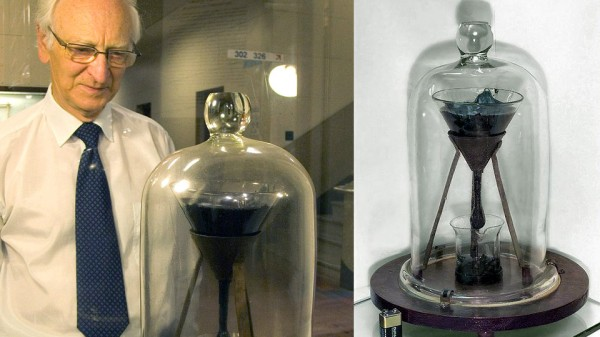
该实验是布里斯班昆士兰大学史上第一位物理系教授 Thomas Parnell 在 1927 年开始进行的，目的就是为了向学生们证明沥青一种表面看上去像是固体并且甚至可以锤子击碎的树脂实际上是液体，只不过它的粘性极高，差不多是水的 2300 亿倍。
在实验中，将沥青样本加热倒入一个封了口的玻璃漏斗内，并给它 3 年的时间让它彻底固化，3 年后也就是 1930 年，他将漏斗下端的封口切开，让沥青开始缓慢流动，并记录下一滴沥青留下的时间，这个装有沥青的漏斗并没有控制在什么特殊的条件下，所以它的流速与外界温度息息相关。
一直到现在已经有 8 滴沥青液滴滴了下来，Parnell 教授看到了其中的 3 滴，直到他在 60 岁时离开人世间(希望不是因为无聊死的)，之后 Mainstone 便接管了这个实验。不过很遗憾 Mainstone 接手之后错过了 5 滴，现在他正在等待第 9 滴的下落，可能是今年也可能是 2013 年。
7 为什么所谓五十年一遇、百年一遇的自然灾害几乎年年发生？
- 首先，「百年一遇」并不是 100 年只会发生一次的意思。
人们时常会误认为「百年一遇」指「一百年只会发生一次」或者「如果已经发生一次，在未来若干年内不可能再发生」。 「百年一遇」在专业上较准确的含义是「任意一年内都有百分之一发生概率的事件」。
美国从 20 世纪 60 年代开始使用 100-year event 这种概念用于风险评估，目的是评价「在百分之一概率事件下，工程项目的可靠性」。相应的其实还有 10-year, 50-year，500-year 和 1000-year，是 10 分之一，50 分之一，500 分之一，1000 分之一发生概率的意思。
「N 年」通常指在统计上的回归周期。每一个「N 年一遇」事件都对应一个事件发生时的数值 ， 如降水的 100 年一遇，50 年一遇和 10 年一遇对应水平可能是 200，40 和 30 毫米每小时。不仅洪水、暴雨有「N 年一遇」的分级，干旱和高温等也有「N 年一遇」的分级方式。
「百年一遇」绝对不是 100 年内只发生一次的意思；它的确是极易让人望文生义而导致误解，媒体和某些「专业人士」滥用专业词导致了这种误解。
「百年一遇」是中文翻译后将词义扭曲加重的例子。请查看各版本的《辞海》和《词源》，是否存在「百年一遇」且表达「罕见」意思的词。纵然说「百年一遇」这词在中文中存在，那么在工程上使用的「25 年一遇」，「50 年一遇」，「500 年一遇」等等的词在数学逻辑中与「百年一遇」是相同的，而且有精确的数值差别，日常语言中并不存在这样的固定词汇。
中文中有两个常用词「千载难逢」和「百年不遇」，意思都是极为罕见的事件。当我们把 100-year event 翻译成「百年一遇」的时候，极容易让人与经验中的「千载难逢」和「百年不遇」关联起来，误认为 100-year event 是个「极为罕见的事件」，事实上却不罕见。 在英文中的 100-year event 是个专业术语，而常用语中没有含 100-year 来表述罕见的短语（英文中用 once in the blue moon 表示千载难逢），当在专业领域使用时不会让人误解，流入日常生活时候的误解比中文环境里少一些。
来看看英文环境里对这个词的误解。美国地质调查局的一段话：
What is a 100-Year Flood? the USGS Water Science School flooding information
1960 年代，美国决定用 1% 年超越概率（AEP）的洪水，作为美国洪水保险项目的基础。1% 年超越概率洪水被视为一种在保持公共财产与过份严格的立法之间的较好平衡。因为，在任意一年洪水都有 1% 的概率等于或者超过「1% 年超越概率洪水」，且平均回归周期的间隔为 100 年, 所以通常写作「百年一遇洪水」。尽管「百年一遇洪水」是合理的词，但它却时常被不熟悉洪水科学和统计的人所误解。
美国土木工程师协会（American Society of Civil Engineers）也指出英文的 100-year event 当中使用的这个回归期（return period）会造成误解，而建议使用超越概率（exceedance probability）来代替。
美国某教授被谈到洪水与保险业关系的时讲了这样一个现象：投洪水保险的家庭通常投保百年一遇洪水保险，于是每当发生一次「百年一遇」等级洪水之后，会出现一段时间的退保潮。因为这些家庭认为，刚刚发生了一次百年一遇的洪水，那么在接下来的有生之年里，基本上不会发生这样的洪水了。
- 其次，「百年一遇」事件经常发生。
如果一件事在一年里发生概率是 \(\frac{1}{T}\) ，那么不发生的概率就是 \(1 - \frac{1}{T}\) ，那么连续 N 年不发生的概率就是 \((1 - \frac{1}{T})^N\) ，N 年里至少发生一次的概率就是 \(1 - (1 - \frac{1}{T})^N\) 。公式：
\[ P_e = 1 - (1 - \frac{1}{T})^N \]
那么 100-year 事件在 100 年里至少发生一次的概率：
\[ P_e = 1 - (1 - \frac{1}{100})^{100} = 0.63 \]
100-year 事件在 10 年里至少发生一次的事件概率：
\[ P_e = 1 - (1 - \frac{1}{100})^{10} = 0.095 \]
所以 在任何 10 年里，发生一次以上 100-year 事件的概率都大于 9.5%。
这是一段来自美国地质调查局有关华盛顿大洪水的话：
华盛顿的大洪水有可能在任意一年里发生。全州的河流几乎年年提高历史洪水记录。在华盛顿州，过去几年里有数条河流里都有超过百年一遇的洪水。为什么百年一遇洪水发生如此频繁？为什么这些洪水不是 100 年才发生一次呢？
「百年一遇洪水」的术语容易误导人，因为它使人们认为每 100 年只发生一次。但真相是大洪水可能在任何年份里发生。「百年一遇洪水」完全是个统计称呼，表明该量级洪水在任意一年内有 1% 的概率发生。更好的术语应当是「1% 概率洪水」。
两次任意量级洪水的实际间隔年份波动很大。我们时常在连续或近乎连续的多个潮湿年份里遇见多次大洪水。
- 第三，所谓的「百年一遇」事件强烈依赖已有观测数据，人类活动和气候变化也会影响这个数值。
以降水量为例，50 毫米每小时的降水量对于某些沿海地区来说，可能只是 5-year 事件（20% 概率），但这个数值如果放在干旱地区，可能就是 1000-year 事件（0.1% 概率）了。 某一数值是属于「多少年事件」，都是依赖该地区已有的观测数据。
假设 10 毫米每小时降水量是某 A 城市的「百年一遇」降水，说明降水大于 10 毫米每小时在统计上是 1% 概率事件，但 如果发现连续多年都有 10 毫米每小时事件持续发生，那么就需要更新统计数据，将近年的降水状况也加入统计计算，然后新结果就可能将 10 毫米每小时量级的降水变为「10 年一遇」(10% 概率） 或者是「20 年一遇」（5% 概率）了。 持有的观察时间序列越长，这个概率值也就越准确。
除过统计年份的因素之外，「百年事件」的数值会随自然状况的变更而波动。例如，如果在全球变暖的趋势下，降水和气温的「百年事件」的波动变大，意味有可能引起更大更高频率的洪水，事先定义的「百年一遇」事件的发生频率会增高——从 1% 概率增加到大于 1% 水平；也可能某些地区气温升高却降水减少，带来更多「百年一遇」的干旱。
除了气候的自然变化之外，人为影响也会改变「百年一遇」事件的发生频率。 发生「百年一遇」的暴雨并不必然引起「百年一遇」的洪水，因为洪水形成受土壤吸水能力、蒸散发能力、地表粗糙度和河道输水能力而决定。例如，2014 年的凤凰古城被淹，诸多的专家认为是由于凤凰古城两岸被过度开发造成；占用河道、滩涂、岸坡以及大量设计不合理的风雨桥都是人为造成如此大洪水的原因，而不是因为降水量太大。从任何水文或工程（Hydrology，Water resource engineering 或 Open channel hydraulics）的教科书上，都可以分析出这个结论——当然具体分析需要分析流域的气象、水文和水利管理的数据。在不同的洪水等级下，河道和堤岸被淹的范围不同；如下图（Chapter 3: Hydrology and the "100-Year-Flood"）所示在「100 年一遇」，「500 年一遇」和「大于 500 年一遇」的洪水下淹没范围不同。凤凰被淹，其中一个原因就是大量的建筑已经修建于有较高洪水风险的范围内，不仅危及自身，同时增大了洪水量。
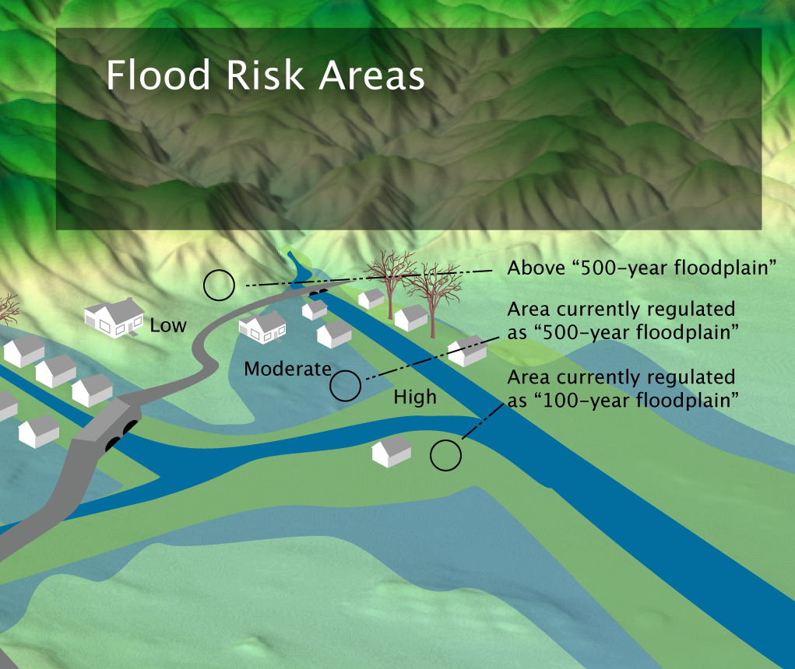
下面两张图的例子来自美国地质调查局（Floods: Recurrence intervals and 100-year floods 和 The "100-Year Flood"），根据不同时期的观测数据，以及人类活动影响而导致计算出来的「百年一遇」事件量级差别较大。
图 1 是西雅图附近的河流，在快速的城市化之后，河流的「1% 概率洪水」流量大于城市化之前的流量，也就是说城市的扩展，不仅导致了发生基于历史统计的 1% 概率洪水的频率增高，而且导致了新统计下 1% 概率洪水量级增高。城市化之后的 1% 级别大洪水在城市化之前，从未发生过。但若以 1956-1977 年间得出来的 1% 概率洪水算，在 1956-1994 的 38 年内，共发生了 10 次之多。
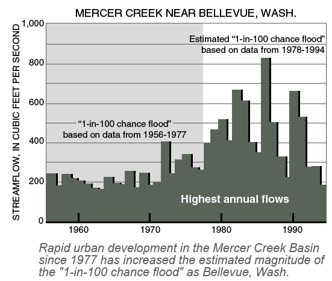
图 2 的河流同在西雅图，但由于其上游修筑了 Howard Hanson 水坝，在有水坝之后的「百年洪水」的流量明显减少。1937 - 1961 年间约 10% 概率的洪水在 1962-1994 年间再未发生过，且洪峰流量的数值波动范围被限定了，这也就是防洪水坝真实的作用。
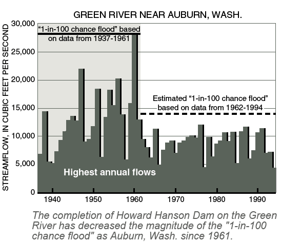
- 第四，不同区域发生「百年一遇」事件的概率相互独立。
也就是说，当河北发生「百年一遇」事件的时候，很可能北京也发生了另一个「百年一遇」事件。
区域——这个概念较为模糊，也会因为所关心的问题不同而范围不同。如果说是地震，地区会以地质板块来划分；如果说是降水，会由个降水分布图或流域划分；如果说是风，由风场图划分。区域划分在洪水领域常以流域为单位——流域可以简单定义为所有在其上收集的降水能够汇集到同一个河流断面的土地面积的集合。或大或小的一条 不同的流域划分导致流域面积不同。「区域」并不是全等于一个城市，一个省或者任何一级行政单位。
假如，你在几年里的新闻里听到多个地方都发生了一次「百年一遇」事件，不用太怀疑，这种事情的概率很高。请看分析：
上图是针对单一区域「N 年一遇」某事件在未来 1、10、50、100 年内至少发生一次的概率。下图是 10 个统计上独立的区域「N 年一遇」事件在未来 1、10、50、100 年内至少发生一次的概率。
仅分析「百年一遇」的情形（黄线），单一区域在未来 1、10、50、100 年内发生至少一次百年一遇事件的概率分别是 1%、10%、39%、63%。但如果同时分析 10 个独立区域，至少发生一次「百年一遇」事件的概率就变为 10%、63%、99%、100%， 这些发生概率都远大于 1%。
假如把中国划分为 300 个不相关的流域，每个都接近海南岛那么大；那么在未来一年内发生「百年一遇」事件的概率是 95%，几乎可以说在这 300 个流域内每年都会发生一次「百年一遇」事件。但实践当中区域划分要复杂得多，而且概率通常表示在长时间序列里的发生次数，像这种 95% 发生概率的事件，有的年份内多地同时「百年一遇」，就会分担掉某些年一次都没出现的问题。
总结：
- 某地区某灾害的「百年一遇」绝对不是一百年只发生一次的意思。
- 同一区域或不同区域的「百年一遇」事件可能在连续的时间段里发生；在偌大的中国，很可能年年发生或者同一年发生数件「百年一遇」事件。
- 「N 年一遇」事件的发生概率以及具体数值都会受气候变化和人类活动的影响。
8 当前人类不可能完成的任务：马航 MH370 搜索
1 月 17 日，中澳马三国暂停了印度洋的 MH370 搜寻任务，理由是在完成 12 万平方公里水下搜索后没有找到更多有价值的线索。也许此次任务，从一开始就是个几乎不可能完成。除非有奇迹发生。原因有四。
8.1 定位难，可能从未找对地方
大家都有印象，近三年的搜索中，可能的区域几经变动：从最初的南海底区，到后来的马六甲海峡以东，到后来的哈萨克斯坦地区，再万里跳转到南印度洋地区当前的搜索区域，一直到最近新提出的可能还要再靠北一点。其中的原因就是飞机失联后的飞行路线扑朔迷离，可以提供用于定位的线索太少。
首先，失联后，不管何种原因，飞机关闭了所有定位和通讯设备，还离开了雷达监控范围，使得所有常规定位方法都无效。
其次，从目前的分析来看，失联前后，飞机在马六甲附近做了非常复杂的机动，使得难以对其后续的飞行方向做出准确预测。
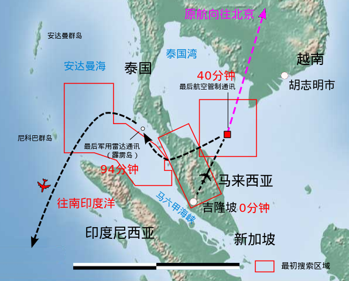
Figure 6: 箭头：最初搜索区域、已知路线和根据 Ping 信息推断的路线。小红框：雷达捕捉。
第三，飞机自身拥有足够多的燃料，可以在失联后继续飞行 7 小时之久，进一步增大了定位难度。
最后还是靠飞机发动机向海事卫星发出的握手信号来间接推测飞机动向，而且这个握手信号本身没有任何有帮助的定位信息，只是一个 Ping 信号而已，只能通过最原始方式，即通过信号传递延迟时间，乘以光速，得出飞机可能距离卫星的距离，画出一个巨大圆弧，然后与飞机可能飞行的最大范围（也就是以失联点为圆心，最大飞行距离为半径的圆弧），两个圆弧相交，确定出一个大概位置。
Figure 7: 根据发动机 Ping 数据推断的 MH370 航班失联后可能飞行的南北走廊
理论上两个圆弧在中亚还有一个交点，但综合各种因素予以排除。专门搜索南印度洋这个，但这一切都是间接推测，也想象这种定位方式的误差之大，概率之底，只能是「不放弃一丝线索」的办法。
甚至 2016 年 9 月，专家普遍认为，可能最后搜索的 12 万平方千米位置也不太对，应该在稍微偏北的地方。
也有可能，从来就没找对地方，因为此次定位实在是太难。
8.2 海太深，非一般装备能看到
三年多来，历经了早期漂浮物搜索、中期黑匣子信号侦听和后期海底搜索三阶段。参与队伍从最初的 12 个国家 40 多艘船、12 架飞机、几十颗卫星，到最后海底搜索阶段只剩下三国和一家公司。很重要的原因就是，后期海底搜索的海太深，难度太大，有这能力的国家只有美国。
深海探索，跟深空探索、人体探索一样，并称为人类科学认识三极！
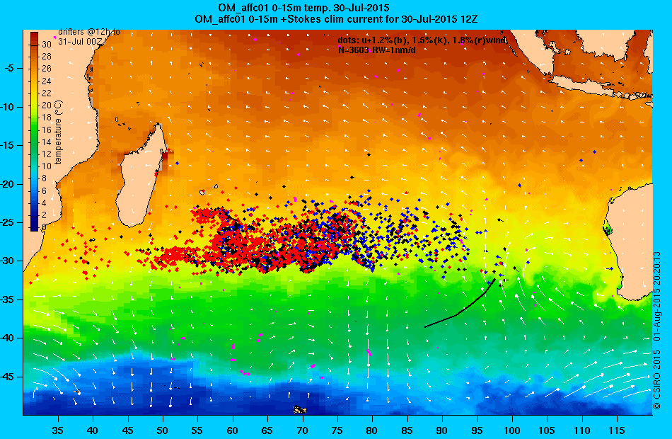
Figure 8: MH370 残骸漂移可能路径分析
因为早期海面漂浮物搜索，派船或者飞机，目视就能看水面是否有异物，门槛不高。甚至商业卫星公司可以组织大家在网上一起分析卫星照片都行，所以参与众多，队伍庞大。中期黑匣子信号侦听，因为黑匣子自己会发出信号，只要有水下听音装置就能听，所以参与的力量也不少。而后期 5000 米海底搜索，对技术和装备的要求不是一般的高。
首先水太深，后期搜索区域平均深度 4000 米，部分区域超过 5000 米。这是什么概念？首先已经超过水面舰船的探测深度。大部分舰艇的主被动声纳手段，都是针对反潜而设计，而军用潜艇的一般的下潜深度一般不超过 400 米，最厉害的前苏联「钛合金」潜艇也不超过 1000 米，因此反潜战的各种声纳基本也按照这个深度来设计。5000 米水深，对于水面舰船声纳来说，多了 5 倍。
其他科考船的海洋地址测绘声纳，虽然能达到 5000 米海底，但是因为距离远，误差成倍扩大，测绘海底的山脉峡谷尚可，分辨几米见方的物体是岩石还是飞机残骸，难度颇大。
其次必须一寸一寸成像扫描。既然默认飞机已经沉到了海底，就必须在海底复杂的海床地形中识别出飞机，这可不是电影里反潜声纳「砰」一声，就能从海水里找到金属的潜艇那么简单，必须对海床进行声纳成像扫描，从形状分辨出哪里是海床地形，哪里是可疑的飞机残骸。
这个难度也不小。首先所在海区可不是平坦的沙滩，而是一串水下火山山脉，地形崎岖复杂。另外多方推测， MH370 是以 360km/h 的速度撞向海面，早就支离破碎，再加上下沉 5000 米的巨大水压和洋流扩散，到了海底早就是几米、十几米见方的残骸碎片，散布在很大区域，而不是一个几十米圆柱体的完整机体，进一步增大了海床成像识别的难度。哪里是岩石？那是是飞机残片？后期主用的 ProSAS-60 深潜器的声纳分辨率达 10 厘米，就是这个用途。
再就是要在这个深度长时间工作的潜航器可不多。首先排除有人潜航器。有人潜航器一般用于定点科考，无法长时间大范围水下作业，带着人也危险。在就是大部分潜航器都是潜水作业，深水的少。而有限的深水潜航器中，很多是科研状态，即「试验 10 次，成功 1 次」即可，真正可靠顶用的「下水 10 次，成功 9 次」 成产品少。
前期美国海军提供了「 蓝鳍金枪鱼 21」深潜器，最大工作深度 4500 米，持续时间 25 小时，采用侧扫声纳来绘制海床地形图，上浮后图像传给船上的专用设备，来从图像中识别可疑的残骸。虽然累计 10 个航次，但后来发现海底地形过于复杂，某些区域深度超过 5000 米，超过了「蓝鳍金枪鱼」的极限深度，还发生数次故障，险些损失掉。
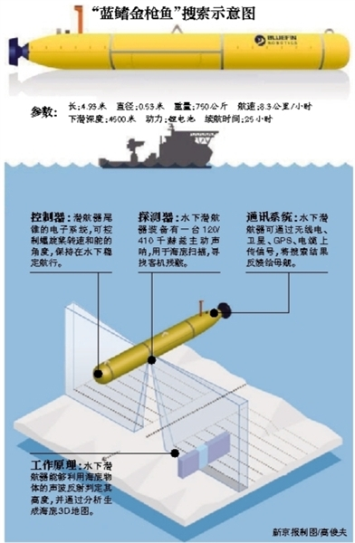
所以当后期海底搜索阶段，澳洲联合协调中心 JACC 向全球招标时，应者寥寥，最后只有荷兰 Fugro 公司应标。Fugro 公司作为荷兰著名水下工程公司，派出了三艘海工作业船，但这都不重要，重要使得是上面搭载的美国 6000 米级拖曳式深海探测器。

这个叫做 ProSAS-60 的深潜器，由美国凤凰公司及其合作伙伴 HIS 公司合作开发，深潜器两侧装有 3.3 米的合成孔径声纳，分辨率高达 10 厘米。这样才能分辨出是石头还是外形异常的疑似飞机残骸。
ProSAS-60 深潜器工作深度 6000 米，一般保持在距离海床 100 米高处，侧扫范围 1200 米，以航速 1-3 节的速度（5km/h，也就是人快走的速度）缓缓前进，每天能扫描 194 平方公里，每小时产生 30G 的数据，上浮后把数据传输给船上设备，进一步分析几百 G 图像中是否有可以残骸。
就是靠着这些成熟可靠的深潜器，每天在水下 10 厘米、10 厘米扫描，用两年时间扫完了 12 万平方公里海床。中间还丢失了一次，但也是想方设法找回来了，因为一部就 1200 万美元！
8.3 投入太大，三国都难以支撑
「不惜一切代价」的口号，在 MH370 搜索上，也难以实现。
水下作业从来都是耗资巨大的。海底搜索，因为其难度大，租用的都是全球顶级技术和装备，范围还那么大，因此耗资也是巨大的。仅 12 万平方公里的水下扫描，就耗资 1.8 亿澳元，合 9.3 亿人民币，这还不包括找到以后的打捞作业费用。面对着笔巨大开支，澳中马三国都各自有话说了。
澳洲「躺枪」：按照国际海事组织的划片负责制，南印度洋海区归澳大利亚管，于是本来开始作为局外人看东南亚各国在南海忙活的澳大利亚，突然就成了搜索行动主要负责人，成立了联合搜索协调中心 JACC，承担了大部分费用，一直觉得自己很冤，政府总理多次在媒体上喊冤。
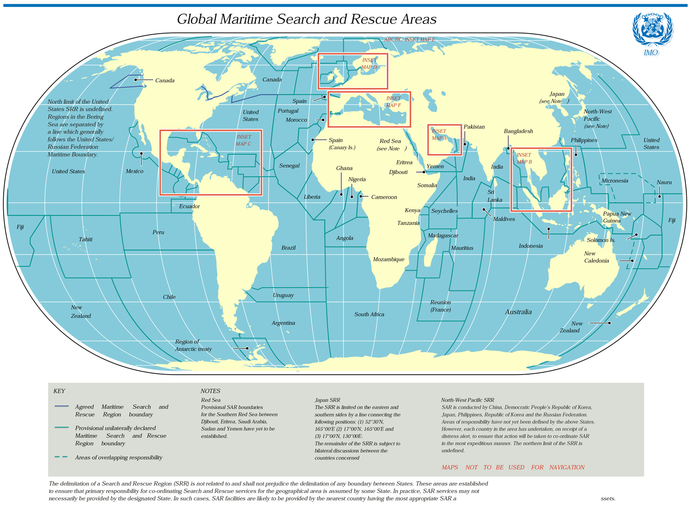
马来西亚无力：马来西亚作为客机所在国，责任也少不了，但深海搜索耗资巨大，澳大利亚都吃不消，小国马来西亚更是吃力，尤其后来又发生 MH17 在乌克兰被击落的空难，马航直接破产，政府也是难上加难，有消息称也是咬牙分担澳大利亚一半的费用。
中国努力作为：中国虽然既不是搜索发生地，也不是飞机拥有国，但毕竟上面三分之二都是中国公民，义不容辞。在 2016 年 1 月澳洲总理喊冤后，中国表示承诺承担 2000 万澳元费用。尤其是后期派出「东海救 01」作为美国深潜器的搭载平台，也是充抵部分搜索费用的意图。这样也是体现了对国民负责，对国际事务有担当的态度。
然后正是因为耗资巨大，所以在搜索之初，三国就达成一致：如果这 12 万平方公里找不到任何有价值线索，就暂停。毕竟印度洋太大。
8.4 时间耗不起，沧海桑田
即使有国家愿意出几百亿美元，也难以成功，因为跑不过时间。如前所述，同时动用 3 部水下潜航器，一年多时间里，花费一个多亿，也就探了 12 万平方公里的面积，进展非常慢。如果扩大搜索范围，即使有足够的资金，但也需要消耗好几年，甚至十几年时间。

而该海域洋流运动剧烈，海底火山和地质活动频繁，支离破碎的飞机残骸很快就会被厚厚的沉积物所覆盖，恐怕声纳扫到了也难以识别出来。这才是最让人绝望的地方。
8.5 总结：大自然面前，人类依然弱小
近三年的 MH370 搜索告一段落，主要原因是定位信息太少，深海搜索太难，耗资太巨大，进展太缓慢等因素。如果没有奇迹发生，适可而止不是大家所期待的，但却是最理智的选择。
虽然人类科技和能力达到前所未有的高度，但跟此次任务相比，在大自然面前依然弱小，现阶段几乎就是个「不可完成的任务」。只能一边对所有遇难者家属表示深切哀悼，对投入巨大努力的各国政府和人员表示敬意，同时不断探索新技术和新机制，和以及不断认知海洋的步伐，避免此类悲剧重演。
9 时间是什么？
9.1 一
时间是什么？物理学家是不会研究这种哲学问题的，费曼在《QED: The Strange Theory of Light and Matter》中对精细结构常数的看法：
It's one of the greatest damn mysteries of physics: a magic number that comes to us with no understanding by man. You might say the "hand of God" wrote that number, and "we don't know how He pushed His pencil." We know what kind of a dance to do experimentally to measure this number very accurately, but we don't know what kind of a dance to do on a computer to make this number come out - without putting it in secretly!
Fang 的《中华第一系物理讲义页边集》第二卷之林宗涵热力学统计物理讲义：
58 年林宗涵到一个很土的化工工厂劳动，问那里的一个人如何理解熵，那人答，查一查表不就得了？
说明很多东西，知其然不知其所以然就可以了，没必要深究到底是什么。时间也是一样，物理学家关心的问题，只是怎么精确地测量时间，怎么有一个时间单位的共识。
那么首先，时间如何测量？最直接的方法就是有一个稳定周期的东西，只要数周期数目就可以了。以前的单摆是数钟摆摆动的次数，现代的石英钟本质是数石英振荡的次数。可是这些设备每个人做出来的都不一样，难以有世界范围的共识。于是人们想到了天体运动，它是不以人的意志而转移的。第一个真正意义上世界公认的时间单位标准就是 1960 年规定的地球绕太阳的运行周期（即太阳年）为三千一百五十多万秒。年到秒的换算关系为，一纳世纪约等于圆周率秒：1 nano-century = π seconds ，这个记忆方法普遍认为是贝尔实验室的 Tom Duff 最先提出来的。
其实早在几百年前，人们就已经发现天体运动周期并不是很稳定。在太阳年规定之前，世界范围内基本公认、但没有达成真正共识的秒定义是用地球自转周期（即太阳日）。直到 1960 年，大家决定还是用稍微稳定一些的太阳年来规定时间单位标准，使用的是 1900 年的太阳年。如何能测量几十年前的太阳年？事实上，几百年前的天文测量已经相当精确，一百多年前人们就已经能预测出二十世纪太阳年长度的变化规律了。因此，要实践这个太阳年的标准，只要测量当年的太阳年并换算回 1900 年的就可以了。
对太阳年标准的抗议声依旧此起彼伏。依靠原子物理的发展，人们发现铯原子两个稳定基态之间的振荡频率是很稳定的、不受人的意志而转移的，可以很精确地测量，更重要的是不会像地球一样越来越慢的。于是 1967 年的一次会议，把这个振荡频率规定为了 9192631770 Hz。这个规定一直沿用至今，而且越来越多的研究表明，当初这个规定的选择极具前瞻性，现在的时间测量精度已经进步了四五个数量级，而铯原子在这么高的测量精度下仍旧看不出其振荡频率有任何不稳定。
9.2 二
最近几个世纪以来，人类对精确计时的需求越来越高，这个需求最初来自于导航。
十五世纪，探险者开始出海远航，为航船定位是一个很重要的问题。用仪器观测天象可以精确地测量纬度，可是由于地球自转，测量经度不但需要精确的天象观测，还需要一个精确的钟。在没有走时准确的钟的年代，海上导航是很困难的，导航失误常常导致海难。1707 年 Cloudesley Shovell 因为算错了自己的位置，和另外三艘军舰相撞，发生大海难，死亡两千多人，这类事故使人们开始重视海上导航的问题。牛顿在 1714 年指出：
For determining the longitude at sea, there have been several projects, true in the theory, but difficult to execute: one is, by a watch to keep time exactly: but, by reason of the motion of a ship, the variation of heat and cold, wet and dry, and the difference of gravity in different latitudes, such a watch has not yet been made.
制造钟表其实是一门古老的技术。伽利略很早就制作出了单摆，并提出了用单摆制做时钟的可能性。1657 年 Christian Huygens 发明了第一个单摆钟，每天只走差 10 秒。我们一般用相对误差来表示钟表的准确度，这个钟的准确度就是 10 秒 / 1 天 = \(10^{-4}\) 。1726 年 John Harrison 造出了每月只差 1 秒（ \(4 \times 10^{-7}\) ）的钟，不过正如牛顿指出的，船的运动和温湿度变化导致这些基于单摆的钟在船上都是不可能精确的。1714 年，英国政府的 The Board of Longitude 悬赏两万英镑，奖励精度 30 海里的导航方案（Longitude Act）。这需要一个在船上每天只差 3 秒（ \(3 \times 10^{-5}\) ）的钟。结果还是 John Harrison，把他后半辈子的心血都用在了研制精确钟表上，最终造出了基于发条的计时器，1761 年在船上试用，每天只差 1 秒（ \(10^{-5}\) ），拿走了这个大奖。在之后的几百年里，导航技术有了长足的进步，钟表制造虽然也发展了很多，但是在导航中的地位越来越不重要了。
历史总是会反复的，如今最先进的民用导航系统——全球定位系统（GPS），其核心技术之一就是卫星上的原子钟（主要是铯原子和铷原子）。这些原子钟的精度达到 \(10^{-13}\) ，比几百年前的技术提高了好几个数量级。为什么需要这么精确的钟？GPS 的基本原理是三边定位，如果卫星位置已知，那么接收器只要测出到三颗卫星的距离就可以使用三个方程，把经度、纬度、高度三个未知数解出来。这里的问题是测量到卫星的距离是通过卫星广播信号的时间差，这就需要所有卫星和地面接收器的时间高度同步，这种方案要求每个接收器都装备一个原子钟。而 GPS 真正的方案是，把 GPS 卫星上的时间也当作未知数，使用四颗卫星的信号和四个方程，把经度、纬度、高度和 GPS 时间都算出来，这样接收器的成本就低很多了。因此 GPS 的核心除了高度精确的卫星轨道外，还有各个卫星之间高度同步的时间。时间同步需要什么样的精度呢？GPS 设计的定位误差在 10 米左右，除以光速等于 30 纳秒，即卫星之间的时间同步至少需要在 30 纳秒之内。现代 GPS 卫星的设计标准是几天才需要和地面对时一次，如果 30 纳秒除以 3 天，则卫星上的原子钟的相对误差需要在 \(10^{-13}\) 的量级，即一百万年才差 3 秒钟。
现在最先进的原子钟，比 \(10^{-15}\) 的精度稍强一些。最近的几十年每十年原子钟的精度就提高十倍左右，而人们对计时标准的要求也是按照这个速度在发展。科学的前瞻性很深刻的体现出来了——这一代的科学就是下一代的技术。
GPS 已经深刻地改变了这个世界，远程通讯、航空摄影、交通工具跟踪控制、海陆空民用导航、捕捞搜救、地震监测、矿产勘探、资源管理、气象学、地质学、水文学、海洋学、时间控制、仪器校准……（太多的科学技术依赖于 GPS，这个美国国防部控制的系统，不知道是不是一件好事？）除了 GPS，精确的时间系统也有很多其他应用，比方现代电力网的控制，通讯，医药，互联网控制。
就科学研究而言，现代科学技术能够最精确测量的物理量就是时间或者频率了，所以很多科学测量都转化成时间频率测量。另外，在可预见的将来，国际单位制系统也会全部基于时间频率测量来定义。长度单位「米」在 1983 年被定义为光在 1/299792458 秒内在真空中传播的距离。如果没有精确的时间测量，长度测量的精度那就无从谈起。
9.3 三
计时的基本方法就是寻找一个有稳定周期的运动，然后数周期。天体的周期运动因为每个人都看得见，也无法改变，所以很容易达成共识。
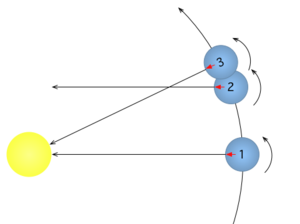
「天」是地球自转的周期。通常所说的「天」是指「太阳日」（solar day），即太阳出现在同一视线的周期（图中 1 到 3），这和「恒星日」（sidereal day，即遥远恒星出现在天空中同一位置的周期，图中 1 到 2）有微小的区别。由于地球公转方向和自转方向一致，恒星日比太阳日要稍短一些，大约 4 分钟。一般卫星参数都是用恒星座标系统，所以地球同步卫星的周期一般是 1436 分钟。
「年」是地球绕太阳公转的周期。很久以前人们就发现一年的时间里地球并不自转整数圈，而大约是 365.25 圈，于是想出了每四年一个闰年的办法来解决这个分数问题。
「月」最开始来自于月亮的圆缺变化，即月亮绕地球一圈的周期。这个周期有各类定义方法，比如恒星月（sidereal month，27.3 天），不过通常只有朔望月（synodic month）是有历法意义的，因为它是月亮在地球看来两次对准太阳的周期，也是月亮圆缺变化的周期。很不巧，朔望月不是整数天，大概是 29.53 天。中国的农历历法是描述月亮圆缺的，所以只好有的月 30 天，有的月 29 天。更不巧的是，这样下来 12 个农历月，到一年还差大概 11 天，只好每两三年用一个农历闰月来补缺相差的天数，每 19 年大概有 7 个农历闰月。另外，农历闰月的位置是根据节气的一些特征来计算的，虽然计算很难，不过都有规律可循。后来从西方通行起来的公历历法，就完全不管月亮圆缺了，直接每个月 30 或 31 天。
9.4 四
1967 年国际通过了新的时间标准，使用原子钟来规定一秒钟的长度，直到现在这仍旧是最精确的计时方法。不过，用哪个原子钟作为世界标准时间呢？最终的决定是，世界上所有一定级别的原子钟进行加权平均，结果作为世界原子钟时间标准（International Atomic Time，缩写为 TAI，缩写来自法语 Temps Atomique International）。目前世界上有 300 多个原子钟参与 TAI。这样的好处是可以剔除不准的钟，同时坏掉几个原子钟也不太会影响计时标准。
TAI 建立以后，很多物理学家认为人类已经找到了终极的计时方法，这个领域已经没什么好研究的了。但到了 80 年代，有人发了一篇论文，说原子钟因为不是工作在绝对零度，所以原子钟本身的黑体辐射会造成一定的误差。结果大家一算，所有的原子钟都要作巨大的修正。到了 90 年代，随着原子钟精度的提高，人们发现黑体辐射修正很难计算，一些原子钟因为设计不良，计算不准修正值，因此被踢出了 TAI。如今，黑体辐射修正已经成为铯原子钟的主要误差之一。
TAI 的计时精度比天文测量要高很多，而且测量也很快。天文方法校正时间需要测量一年的天象，而铯原子钟只要测量几个星期就可以达到极高的精度。大部分人对 TAI 很满意，但天文学家们表示了不满，举例说因为地球越跑越慢，如果按照当时的 TAI 标准，几千年后太阳到天顶的时间就会是子夜而不是正午了。最后大家只好妥协，提出了协调世界时（也叫国际协调时）。规定协调世界时缩写的时候，英语国家要使用 CUT (Coordinated Universal Time)，法语国家要使用 TUC (Temps Universel Coordonné)，只要再妥协一次，缩写为 UTC。天文学家和物理学家协调出来的 UTC 时间，也就是我们日常所用的标准时间。
当时根据天文观测规定的时间叫做 UT1 (Universal Time)，UTC 就是 TAI 和 UT1 进行综合。UTC 在 1958 年对准到 UT1，这之后 UTC 平时走时按照 TAI，但是一个叫国际地球自转服务（International Earth Rotation and Reference Systems Service ，IERS）的组织有权在适当的时候在 UTC 里加入闰秒，以保证 UTC 和 UT1 的差别永远在 1 秒钟之内。闰秒一般加在 6 月或者 12 月最后，下图是最近几年 UT1 和 UTC 差距的变化，每个不连续的跳跃就是 UTC 加入闰秒的地方。由于加了这么多闰秒，2007 年 UTC 已经比 TAI 落后 33 秒。
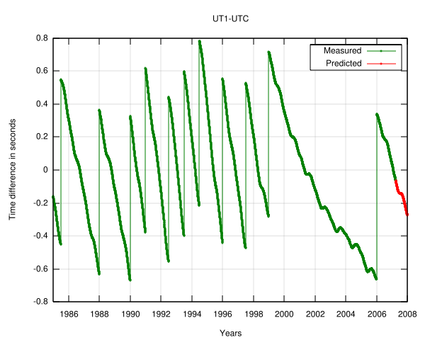
还有一个常听到的缩写是 GMT (Greenwich Mean Time)，GMT 理论上是 UT1 的前身，但是因为现在概念混淆，很多时候 GMT 被认为是 UTC 的同义词。另外，由于 GPS 要求纳秒级的时间精度，闰秒自然会造成极大的误差，70 年代末第一颗 GPS 卫星上天时，GPS 时间对准了 UTC（当时比 TAI 慢 19 秒），从那以后 GPS 时间按照 TAI 进行，完全不考虑闰秒，所以 GPS 时间永远比 TAI 慢 19 秒。由于 GPS 时间没有闰秒，而且也可以很方便地获得，所以现在一些对时间序列要求高的系统采用的是 GPS 时间而不是 UTC，比如某些手机网络。不过，现代 GPS 信号也会很厚道地包含 UTC 和 GPS 时间相差的秒数，所以地面接收器可以用 GPS 信号来校准 UTC 时间，实际上，这就是目前最准确的 UTC 时间传播方式。
10 我们为什么要放弃永生
人们对死亡通常有一种误解，认为死亡从生命诞生的那一刻起就如影随形，有生就有死。其实严格来说，不可避免的死亡是生命演化出来的，死亡归根结底是笔交易。
人类的历史中充斥着浩劫，我们的祖先在各种天灾人祸的打击下苟且偷生。即使有些人特别幸运，没有死于瘟疫、灾荒、屠杀，也很幸运地没有死于诸如落水、中毒、雷击、坠崖等等意外事故，可人们最终还是会死的，衰老会逐渐地侵蚀人们的肉体，直到死亡最终降临。
长寿一些的生物，比如巨龟能活到 300 岁，但是死亡还是会在生命的尽头等待着它。加利福尼亚巨杉寿命可能超过 3000 岁，时间跨度几乎相当于从牧野之战到北京奥运会开幕，可是最终死亡还是会不可抗拒地降临。这给人一种感觉，那就是死亡是不可避免的，是一切生命不可逃避的终结。然而，事实并非如此。
这个世界上有一种生命，叫「阿米巴虫」，是一种单细胞原生生物。这种生命的细胞质和细胞器被包裹在细胞膜中，没有固定的形状，结构非常简单，但是它却能做到一件让古今无数帝王都梦寐以求的事，那就是永生不朽。阿米巴虫之所以能够做到这点，是由它的生殖方式决定的，阿米巴虫可以由一个个体分裂成两个完全相同的个体来实现繁殖。对于这种无性生殖的生物来说，「死亡」两字有着完全不同的意义。因为只要它们足够幸运，躲开各种致命的意外，理论上它们可以将生命永远地延续下去，当它们的身体到达临界尺寸时，就一分为二。对于阿米巴虫来说，并没有衰老的概念，只要环境允许，它们就能一直繁育下去。而这个由它们引出的有关性和永生的故事，需要从很久以前开始讲起。
且让我们翻回生命之书的第一页，那是一片距今 38 亿年前的浩瀚汪洋。
在最初数十亿年的时间里，地球是单细胞生物的家园，彼时的大自然倾向于准确地复制所有存在的生命形式，因为那时地球上还没有性的概念，那些水中微小的、只能用显微镜看到的生物都是中性的，靠着阿米巴虫一样的无性生殖延续着永恒的生命。可能是大自然那不可捉摸的意志做出了选择，大约在距今 12 亿年前的某一天，地球上的第一次有性生殖出现了。
有性生殖是如何开始的？这是一个困扰了科学家们很久的谜题。学者们提出了各种理论来解释「性」的出现，但是没有一种理论可以说服所有学者，因为 有性生殖的代价实在是太大了，当「性」出现在这个世界上之后，不可避免的死亡也就出现了：生命只交出配子，而自身会衰朽死亡。 对于一些生物来说，不仅自己的基因只能传承一半，靠无性分裂维系永生的好日子也一去不复返了。可是学者们发现，几乎所有的真核生物都会在生命周期的某一时刻「纵情声色」一把，绝大部分动植物都是有性生殖的。为什么有性生殖的代价如此巨大，可是生命却宁可放弃永生也要前仆后继地选择性？
因为性带来的好处更大。
美国遗传学家 Hermann Muller 因为发现 X 射线能诱使基因突变而获得了 1946 年诺贝尔生理或医学奖。他本人也亲自在果蝇中诱发了成千上万次突变，他发现，对于一个物种来说，绝大多数的突变都是负面的，有益的突变只占很小的比例，而如何处理这些突变则成为了一个很棘手的问题。 对于无性生殖的生物来说，一旦基因里出现了一个有害突变，这个有害突变就会被原封不动地复制下去， 除非发生一次超级幸运的回复突变（概率极低）。而有益突变也没有得到很好的发挥，因为它的扩散受到了无性生殖的限制，举个例子， 要想把 A 和 B 两种有益突变都收集到一套基因里，无性生殖的个体不得不进行两次突变，可是有益突变的概率太低了， 这无异于连续两次中彩票大奖。
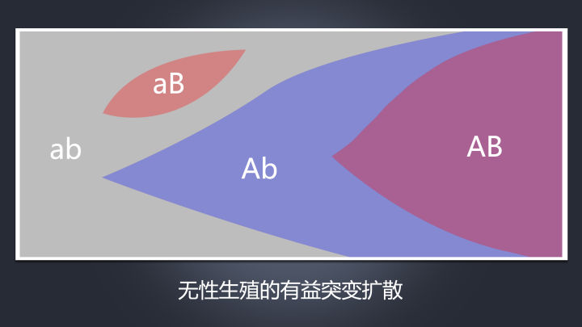
这种情况下，就轮到有性生殖大显身手了。 因为有性生殖不是单纯地复制父辈的基因，而是不同的基因进行交流融合，这使得有益突变和那些没有受到有害突变侵扰的基因得以迅速地富集在一起。 性也可以用同样的逻辑把有害突变富集起来，然后把承载着有害突变的个体交给环境去毁灭，实现对基因的净化。虽然性只能传承父辈基因的一半，但是子辈的适应度却高出不止一倍，对于生命来说，「性」可以说是个稳赚不赔的买卖。就好像一个汽车修理工处理两辆二手车，把两辆二手车上运转良好的零件组装在一起组成一辆好车。 正是有性生殖可以快速地积累起增强物种适应性的创新，才使得生命开始了复杂化的进程，生命也同时开始面对不可避免的，真正意义上的死亡。
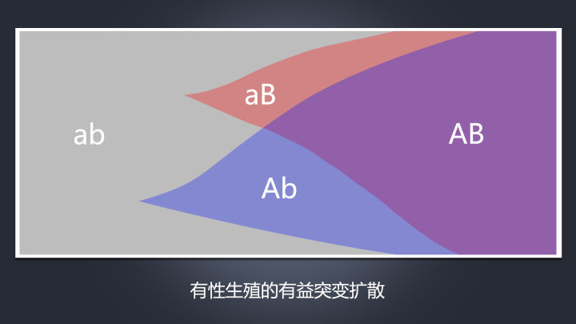
「性」就像是在生命的原野上立起一堵墙，这堵墙一直延伸到地平线的远方，将整个生命界一分为二。砖墙的一侧是沉默而孤寂的世界，自我复制者维系着自己不朽的生命，而砖墙的另一侧则是色彩缤纷的乐园，各种动植物在性的狂欢中享受着速朽的青春，面对着不可避免的死亡。这堵墙不高，有些物种从墙的一侧翻到另一侧，然后再从另一侧翻回来，更有的物种干脆骑在了墙上。
鞭毛虫类里的一些家伙的生殖方式，被有的学者称为「无性的性行为」。这些小家伙身体呈梨子状，在水中通过类似于毛发的鞭毛振动来移动自己，它们通常以自我分裂的方式进行繁殖。然而有的时候，这些小家伙会用它身体较尖的一端戳进另一个同类身体较圆的一端，并且藏身其中，这样一来两个小家伙就合二为一了，融合成一个新的个体。这个新的个体融合了双方各自的成分，之后不久又会开始自我分裂。尽管这些小家伙没有清晰的性别，但是它们已经开始出现雌雄分化的苗头。科学家通过显微镜发现，它们的「圆屁股」上有一个深色的圆圈，那是一种供瞄准用的「靶子」。有靶子的个体通常会表现出雌性的倾向，没有靶子的则更倾向于雄性。可是，有时候一些小个子雄性也会戳进大个子雄性的身体里，大小悬殊的雌性之间也会出现类似的「误会」，不过科学家并没有观察到小雌性戳大雄性的事情（截至文献完成之时），由此可以推测，并不是双方都可以自由转换「性别」角色的。
还有一些物种在有性和无性的墙上翻来翻去，一会有性生殖一会又无性生殖，水螅就是「翻墙党」之一。一般情况下，水螅是通过「芽生」的方式繁殖后代的，它们的身体上会长出一个芽状的突起，这个突起会逐渐地变成一个水螅宝宝，最终脱离母体。除此之外，水螅如果被斩断一只触手，那么原来触手所在的位置就会长出几只新的触手，而被斩下来的触手则会再长成一只完整的水螅。如果我们将一只水螅粉碎成 100 段，就会有 100 段水螅再生出来，水螅也因此被赋予了一个希腊神话中怪物的名字 Hydra：一种被斩了头却可以再生新头的九头蛇怪。让人惊奇的是，当一片水域里的水螅繁殖过多时，水螅呼吸出的二氧化碳就会刺激它们生成一种性刺激素，水螅会因此临时出现性别，雄性和雌性会将精子和卵子排入水中，是否形成受精卵就要看机遇了，水螅也正是通过临时转变成有性生殖的方式来控制群体数量的。
蚜虫也是「翻墙派」的代表之一，在气候温暖之际，雌性蚜虫会通过一种名叫「孤雌生殖（parthenogenesis）」的方式直接产出小蚜虫。因为基因全部来自母亲，所以这些小蚜虫也全部都是雌性。等到天气转凉时，雌蚜虫会开始调整自己后代的性染色体，生出一些雄性后代，而这些雄蚜虫会找雌蚜虫们交配使其生下虫卵，因为只有虫卵可以熬过寒冷的冬天，等到第二年气温转暖以后再孵化出雌蚜虫，让种群重新繁盛起来。在温暖的地方，雌蚜虫甚至会保持全年的无性生殖，因此雄蚜虫根本没有存在的必要。
没有雄性就自己生出雄性，再与之交配的繁殖手段并不是蚜虫的专利，有的竹节虫类和蛾类也会在雄性短缺的情况下自己动手，用孤雌生殖的方式给自己生出一堆雄性再与之交配。这种在有性和无性之间切换的生殖方式被动物学家们称为「异质生殖交替」。
在美国佛罗里达群岛中，有一个小小的珊瑚岛，名叫 Alligator Reef。在礁石之间游弋着一种五彩斑斓的小鱼，名叫佛罗里达鮨（Serranus subligarius），这种鱼是雌雄同体的，可以根据各种实际情况改变自己的性别，当两条同性相遇时，其中一条会瞬间变性和对方交配，然后双方性别倒置再交配一次，最让人震惊的是，如果这条鱼找不到伴侣的话，它们就会自己先排卵，然后再变性，往自己排出的卵泡上喷洒自己的精液，自己和自己交配。
这种雌雄同体可以变性的情况在鱼类里并不罕见，在其他的物种中也能找到类似的情况。欧洲北海附近生活着一种海虫名叫绿沙蚕（Nereis virens）。当它们的身体少于 20 节时，就会维持自己的雄性身份并且产生精子，而当它们生长到超过 20 节时，就会变成雌性产生卵子。通常来说，这种沙蚕年轻时都是雄性，长大了就会变成雌性，可是如果我们把两条雌性沙蚕放进一个瓶子里，较短的一条就会变成雄性，这样它们就能交配了。
德国著名动物行为学家维托斯·德吕舍尔（Vitus B.Dröscher）曾经在他的著作《从相残到相爱：两性行为的自然演化》中表达过一个极具争议性的观点。德吕舍尔先生认为，这个世界上的动物，最开始是先有雌性，然后有雌雄同体的双性，最后才有雄性的。雄性实际上是雌性为了解决环境的适应性问题而「发明」出来的。这个观点饱受争议，同时也让很多男性感到惊讶和尴尬，但是德吕舍尔先生也确实给了我们一个新的思路让我们重新思考这个世界上的两性关系。
可惜的是，并不是雄性被「发明」出来以后就万事大吉了。以我们今天人类社会的主流道德标准看来，理想的伴侣关系应该是稳定、持久、忠诚的。一个物种要是想维持这种理想的两性关系，需要平衡好三种本能，分别是性本能、攻击本能，以及亲和性结对本能，实现这种平衡是一个漫长而复杂的过程，而有的物种甚至连最基本的问题，「应该和谁交配」都没搞太清楚。
臭虫就经常被这个简单的问题所困扰。臭虫的交配方式非常危险，雄性的性器官看起来就像一把匕首，它并不会将其插入雌性的生殖器开口中，而是直接插入雌性的背部，往雌性的血液里射精，通过血液把精子带入生殖系统。这种交配方式被成为「创伤性受精」。通常来说，雌性在每次交配之后伤口会康复并且在背上留下一道「刀疤」。雄性如果交配时太卖力，就会把雌性当场插死。让人尴尬的是，糊涂的雄臭虫会和任何看起来像臭虫大小的、黑色的、平面状的东西发起交配。这就使得有的雄臭虫会被别的雄性「强暴」，乃至有可能被别的雄性内射甚至插死。
在巴西桑托斯市附近的沼泽地不远处曾经建起了一座变电站，当工人接通电流时，附近沼泽里无数的蚊子铺天盖地地朝变电站飞来，然后落在烫手的机器上被烤死。最后工作人员不得不用推土机将成堆的蚊子尸泥清理走。这一切的原因在于那个变电站发出的振动频率为每秒 500—550 次，和雌蚊发出的声音一样，搞不清楚该和谁交配的雄蚊听到这种声音，就把变电站当作了雌蚊，不顾一切地飞向死亡。
同样的问题有时候也困扰着阿德利企鹅，这种企鹅的眼睛是为了在水下使用而设计的，上岸以后每只企鹅都是严重的近视眼。到了求偶的时节，雄性阿德利企鹅会用嘴把自己心爱的小石头推到自己的意中人脚下示好，如果它的意中人抬起它的小翅膀扇它的话，表示自己拒绝和它交配。如果它的意中人接受示好，它就会围着这只雄性跳舞，并且和它开始抒情的二重唱。当然还有一种情况是这样的，意中人俯下身子冲着那只雄性愤怒地尖叫，这尖叫声的意思是「老子是雄性！」
搞清楚应该和谁交配只是第一步，离真正和谐美满的两性关系还差的很远。攻击本能和亲和性结对本能是两种相对的本能，它们和性本能一起左右着一个物种内的配偶关系。可惜的是，很多物种完全无法抑制住自己的攻击本能，因此攻击本能和性本能共振出来的强奸行为在自然界中是普遍存在的。
陆龟就是一个典型的例子，在交配季节，雌陆龟会吃得很胖，这使得它们无法把身体全部缩入壳里，这就给雄陆龟以可乘之机。雄陆龟会在交配前疯狂地追打雌性，而雌陆龟会不顾一切地逃命。在这个过程中，雌陆龟随时可能会被雄性杀死。最后，几个小时的追打终于耗尽了雌龟最后一点体力，它决定放弃抵抗，把头部缩进壳里，于是不得不露出的屁股就只能被雄龟侵犯了。陆龟的交配是彻彻底底的强奸行为，没有半点感情涉入其中。
配偶间的攻击本能无法被抑制时，雌性并不永远处于被强奸的弱势地位。众所周知，不少雌蜘蛛会因为无法克制自己的本能而在交配后吃掉自己的丈夫。可是盗蛛科（Pisauridea）里有一种雄蛛非常鸡贼，它为了不让自己在交配时成为自己老婆的口粮，会先抓一只虫子用蛛丝捆好做成礼物，在它老婆享用礼物的时候赶紧交配然后溜之大吉，但是有的雄蛛完事的非常快，交配完了之后发现它老婆还没开始吃礼物，它就会先抢回礼物然后再逃之夭夭。这样一来雌蛛既没吃到礼物也没吃到丈夫，只能愣在原地。
老虎的交配非常生动地展示了三种本能是如何相互作用的。老虎的攻击本能要远远强于亲和性结对本能，因此它们对彼此都怀着深深的敌意，这种远远大于引力的斥力也使得老虎平时过着独居生活。但是当它们需要交配时，不得不走到一起，母老虎会表现得像个幼崽，躺在地上做撒娇状，而公老虎则站在远处静静地看着。接着，母虎会围着公虎走动，嘴里发出呼噜呼噜的声音，然后用自己的下巴蹭公老虎的脸。如果此时公虎不识趣地做出任何回应的话，母虎会立即暴跳如雷并且疯狂咆哮，因为它的攻击本能太强了，稍不注意就会失控，把公老虎当作敌人。于是，母老虎只得继续调情，慢慢进入性兴奋状态，用性本能和一点极微弱的亲和性结对本能压制住自己的攻击本能，最后完成交配。交配结束之后，母老虎的性本能会立即退散，攻击本能再度占据上风，母老虎会因此立即对公老虎发动致命的进攻。公老虎通常比母老虎强壮，可是公老虎在交配之后，性本能和结对本能却没有立即消散，它依然对母老虎心存温情，这使得它不忍还手，甚至不忍自卫，只能转身逃进森林深处。在老式动物园的小笼子里，老虎在交配之后，母虎会立即杀死无处可逃的公虎，一些老式动物园也因此拒绝让老虎们交配，而在诸如德国哈根贝克这样的新式动物园里，生活在圈养区的公虎会在交配后立即逃跑，而母虎则会到池子里泡一会平息自己的怒火。
过强的攻击本能对于形成人类期许的那种美满的两性关系是负面的，如果我们人类（智人）的攻击本能过强的话，情侣们稍一接近就会疯狂地撕打起来，美满的配偶关系自然无从谈起。那么如果我们彻底摒弃攻击本能呢？如果我们过于温柔，人和人之间清晰的边界也就消失了，我们人类就会像爱好和平性情温顺的长颈鹿那样，凭借着意愿和任意一个性成熟的异性交配。攻击性是非常微妙的东西，如果太强的话，不要说无法形成理想的配偶关系，就连整个社会都会因为成员之间的敌意太强而崩溃，大型社会可能根本就无法形成，人类会在霍布斯世界里徘徊，甚至成为老虎和北极熊那样的独居物种。而攻击性太弱的话，人和人之间又会失去清晰的边界而一塌糊涂。归根结底，是性本能、亲和性本能、攻击本能这三种本能之间微妙的平衡造就了我们主流社会价值观所期许的那种配偶关系。
性和死亡就好像一枚硬币的两面，互为表里。蜉蝣的幼虫可以活一个月，然后变态为没有口器和消化道的成虫，然后它们可以有一天的时间里享受死前的狂欢滥交，就算勉强活过了一天，也会因为没有消化系统而活活饿死。太平洋鲑鱼迁徙几百甚至上千公里，回到它们出生的小溪，然后陷入性爱的狂欢之中。它们短短几天之内就会燃尽自己的生命之火，然后成为一片安静的浮尸。蜂后在十六年的时间里仿佛进入了时间的真空之中，身体没有任何衰老的迹象，可当它储存的精子用完之后，它立刻就会被它的孩子们撕个粉碎。
事实上，人们通过观察，早就发现了性和死亡之间有着某种不同寻常的联系，比如人们发现溪鳟被引入内华达山脉的寒冷、缺乏营养的高山湖之后，性成熟推迟了，但是寿命足足翻了两倍。得益于技术的进步，今天的学者们抛弃了之前对性和死亡主观粗暴的认识，得以以更加微观的视角来解释性和死亡之间的关系。
伦敦大学生物化学家尼克·莱恩（Nick Lane）表示， 所有的衰老基因（gerontogenes）都有一个奇怪的特征，那就是一旦突变，后果全都是延长寿命，而非缩短。后来学者发现，其实这些基因控制的根本就不是衰老，而是性成熟。动物如果想发育到性成熟，需要摄入大量的营养，但是当营养不足的时候，最好的策略就是暂缓发育。 这意味着，当营养充足的时候，身体里一个象征着丰饶的生化信号就会通知细胞们：「现在食物充足！交配的时候到了！」这个生化信号其实是胰岛素。当营养匮乏的时候，通路就会陷入沉寂，性发育推迟，生命就会「暂停」。长时间的饥肠辘辘会延长动物的寿命，但是相应的代价却是不孕不育。这就是为什么糖尿病伴随的胰岛素紊乱往往伴随着不孕不育。
如果我们回顾生命的历史，就会发现，死亡和性在很久以前就纠缠在一起了。三十亿年前的地球，天空还是一片朦胧的红色，空气中几乎没有氧，要想等到微生物们把天空变成蓝色，还需要好几亿年的时间。尽管当时地球上还没有飞鸟走兽，但是生命之间的殊死搏杀却已经在微观的层面上开始了。
噬菌体是一种病毒，专门感染细菌，在现代海洋中，它们的数量要比细菌高出两个数量级。 噬菌体会用自己仅有的一点基因来编码毒素用以杀死宿主细菌，然后又产生一种抗毒素来确保细菌不会被毒死。毒素是长效的，但是抗毒素却是短效的，噬菌体就用这种方式绑架了它感染的细菌。细菌为了对付噬菌体，就把抗毒基因整合到自己身体里获得抗毒性，而噬菌体却演化出更先进的毒素反制，双方就这么开始了一场数十亿年的军备竞赛。学者推测，正是这场军备竞赛缔造出了胱天蛋白酶（caspase enzyme）家族。这种「死亡蛋白」会在细胞内形成连锁反应，把细胞从内部切开，就好像是细胞的自毁程序。一旦细菌感到族群面临威胁时，族群里最优质的细胞就会发育成顽强的孢子，剩下的个体则纷纷启动自毁程序，以鱼死网破的方式将一切归零重来。等危机过后，孢子再重新萌发。
这种细胞的自毁行为，正是衰老以及死亡的本质。今天绝大多数动物，包括我们人类在内，体内复杂的真核细胞实际上是两种细胞的融合：宿主细胞以及线粒体。非常多的学者坚信，我们体细胞里的线粒体其实在大约 17 亿年前是一种在外部环境里独自生活的细菌。它们被宿主细胞吞噬后并没有被消化，反而与宿主细胞成为了好搭档。线粒体从宿主摄取营养，宿主又从线粒体获得能量。线粒体就好像给宿主细胞安上了一台大功率发动机，从此生命的演进一日千里。要命的是，线粒体被引入宿主细胞之前，它的基因里也存留着细胞用以自我毁灭的胱天蛋白酶。
令人惊奇的是，这种「死亡蛋白」并没有直接将生命推向毁灭，反而使得生命开始了复杂化的进程。一个人体内的每一个细胞（除生殖细胞外）基因都是相同的。但即使是基因相同的细胞，也会在不同的环境下发育成不同的样子，这种现象被成为细胞分化。多亏了「死亡蛋白」，这一切才成为可能，那些不顾安排自行其是的细胞会被胱天蛋白酶执行死刑。 我们的身体正是建立在这种细胞再生和细胞死亡的平衡之上，但是由于某种目前还不明确的原因（一种观点认为是多效性基因的效应），这种平衡会随着时间的推移被渐渐打破，如果最终「生」压倒了「死」，癌症就会出现，细胞将以疯狂的增殖毁灭一切，如果「死」压倒了「生」，细胞会被胱天蛋白酶超量地杀死，我们的身体会渐渐凋零枯萎。 像神经元细胞那样的特化细胞一旦被杀死就再也没有了，我们会在岁月中逐渐地失去自我，最后死亡。
这一切正如侦探小说最终指认凶手时会让人大吃一惊一样。当初那慷概地赋予我们能量，陪我们走过十几亿年的光阴，帮助我们演化成智慧生命的功臣，甚至可以说缔造了我们，并且依然存在于我们每个人身体里的线粒体，其实就是死亡骑士本人。
在十几亿年前的浩瀚汪洋中，生命通过「性」高效率地积累起各种增强适应性的创新，开始了生命复杂化的进程。「死亡」又随之降临，确保复杂化的生命得以正常的维持。生命的世界从几十亿年前的一片混沌，到今天这般绚丽缤纷，「性」和「死亡」缺一不可。
11 What Is Good Science?
Demanding that a theory is falsifiable or observable, without any subtlety, will hold science back. We need madcap ideas.
he Viennese physicist Wolfgang Pauli suffered from a guilty conscience. He'd solved one of the knottiest puzzles in nuclear physics, but at a cost. "I have done a terrible thing," he admitted to a friend in the winter of 1930. "I have postulated a particle that cannot be detected."
Despite his pantomime of despair, Pauli's letters reveal that he didn't really think his new sub-atomic particle would stay unseen. He trusted that experimental equipment would eventually be up to the task of proving him right or wrong, one way or another. Still, he worried he'd strayed too close to transgression. Things that were genuinely unobservable, Pauli believed, were anathema to physics and to science as a whole.
Pauli's views persist among many scientists today. It's a basic principle of scientific practice that a new theory shouldn't invoke the undetectable. Rather, a good explanation should be falsifiable – which means it ought to rely on some hypothetical data that could, in principle, prove the theory wrong. These interlocking standards of falsifiability and observability have proud pedigrees: falsifiability goes back to the mid-20th-century philosopher of science Karl Popper, and observability goes further back than that. Today they're patrolled by self-appointed guardians, who relish dismissing some of the more fanciful notions in physics, cosmology and quantum mechanics as just so many castles in the sky. The cost of allowing such ideas into science, say the gatekeepers, would be to clear the path for all manner of manifestly unscientific nonsense.
But for a theoretical physicist, designing sky-castles is just part of the job. Spinning new ideas about how the world could be – or in some cases, how the world definitely isn't – is central to their work. Some structures might be built up with great care over many years, and end up with peculiar names such as inflationary multiverse or superstring theory. Others are fabricated and dismissed casually over the course of a single afternoon, found and lost again by a lone adventurer in the troposphere of thought.
That doesn't mean it's just freestyle sky-castle architecture out there at the frontier. The goal of scientific theory-building is to understand the nature of the world with increasing accuracy over time. All that creative energy has to hook back onto reality at some point. But turning ingenuity into fact is much more nuanced than simply announcing that all ideas must meet the inflexible standards of falsifiability and observability. These are not measures of the quality of a scientific theory. They might be neat guidelines or heuristics, but as is usually the case with simple answers, they're also wrong, or at least only half-right.
alsifiability doesn't work as a blanket restriction in science for the simple reason that there are no genuinely falsifiable scientific theories. I can come up with a theory that makes a prediction that looks falsifiable, but when the data tell me it's wrong, I can conjure some fresh ideas to plug the hole and save the theory.
The history of science is full of examples of this ex post facto intellectual engineering. In 1781, William and Caroline Herschel discovered the planet Uranus. Physicists of the time promptly set about predicting its orbit using Sir Isaac Newton's law of universal gravitation. But in the following decades, as astronomers followed Uranus's motion in its slow 84-year orbit around the Sun, they noticed that something was wrong. Uranus didn't quite move as it should. Puzzled, they refined their measurements, took more and more careful observations, but the anomaly didn't go away. Newton's physics simply didn't predict the location of Uranus over time.
But astronomers of the day didn't claim that the unexpected data falsified Newtonian gravity. Instead, they proposed another explanation for the strange motion of Uranus: something large and unseen was tugging on the planet. Calculations showed that it would have to be another planet, as large as Uranus and even farther from the Sun. In 1846, the French astrophysicist Urbain Le Verrier predicted the location of this hypothetical planet. Unable to get any French observatories interested in the hunt, he sent the details of his prediction to colleagues in Germany. That night, they pointed their telescopes where Le Verrier had told them to look, and within half an hour they spotted the planet Neptune. Newtonian physics, rather than being falsified, had been fabulously vindicated – it had successfully predicted the exact location of an entire unseen planet.
Flush with success, Le Verrier went after another planetary puzzle. Several years after his discovery of Neptune, it became clear to him and other astronomers that Mercury wasn't moving as it was supposed to, either. The point in its orbit where it made its closest approach to the Sun, known as the perihelion, shifted a little more than Newton's gravity said it should each Mercurial year, adding up to 43 extra arcseconds (a unit of angular measurement) over the course of a century. This is a tiny amount – less than one-30,000th of a full orbit around the Sun – but just as with Uranus before, the anomaly didn't go away with persistent observation. It stubbornly remained, defying the ghost of Newton.
Once again, Newtonian gravity was not thrown out as falsified – at least, not immediately. Instead, Le Verrier tried the same trick again: pinning the anomaly on an unseen planet, a tiny rock so close to the Sun that it had been missed by all other astronomers throughout human history. He called the planet Vulcan, after the Roman god of the forge. Le Verrier and others sought Vulcan for years, lugging powerful telescopes to solar eclipses in an attempt to catch a glimpse of the unseen planet in the brief minutes of totality while the Sun was blocked by the Earth's moon.
Le Verrier never found Vulcan. After his death in 1877, the astronomy community gave up the search, concluding that Vulcan simply wasn't there. But even so, Newton's gravity wasn't discarded. Instead, astronomers of the time collectively shrugged and moved on. For years, the mystery of Mercury's perihelion was unsolved, without any serious suggestion that Newton was wrong. Falsification was simply not on the menu.
Finally, in 1915, Albert Einstein used his brand-new theory of general relativity to show that he could succeed where Le Verrier had failed. General relativity was a new account of how gravity worked, superseding Newtonian physics – and it perfectly predicted the shift in the perihelion of Mercury. Einstein said he was "beside himself with joy" when he realised that his theory could correctly solve this longstanding puzzle. Four years later, the British astronomer Arthur Eddington and his team took their powerful telescopes to an eclipse, not to hunt for Vulcan, but to confirm that starlight bent around the Sun as Einstein's theory had predicted. They found that general relativity was right (though later investigations suggested that their results were marred by errors, despite reaching the correct conclusion); Einstein was instantly rocketed to fame as the man who had shown Newton wrong.
So Newtonian gravity was ultimately thrown out, but not merely in the face of data that threatened it. That wasn't enough. It wasn't until a viable alternative theory arrived, in the form of Einstein's general relativity, that the scientific community entertained the notion that Newton might have missed a trick. But what if Einstein had never shown up, or had been incorrect? Could astronomers have found another way to account for the anomaly in Mercury's motion? Certainly – they could have said that Vulcan was there after all, and was merely invisible to telescopes in some way.
This might sound somewhat far-fetched, but again, the history of science demonstrates that this kind of thing actually happens, and it sometimes works – as Pauli found out in 1930. At the time, new experiments threatened one of the core principles of physics, known as the conservation of energy. The data showed that in a certain kind of radioactive decay, electrons could fly out of an atomic nucleus with a range of speeds (and attendant energies) – even though the total amount of energy in the reaction should have been the same each time. That meant energy sometimes went missing from these reactions, and it wasn't clear what was happening to it.
The Danish physicist Niels Bohr was willing to give up energy conservation. But Pauli wasn't ready to concede the idea was dead. Instead, he came up with his outlandish particle. "I have hit upon a desperate remedy to save … the energy theorem," he wrote. The new particle could account for the loss of energy, despite having almost no mass and no electric charge. But particle detectors at the time had no way of seeing a chargeless particle, so Pauli's proposed solution was invisible.
Nonetheless, rather than agreeing with Bohr that energy conservation had been falsified, the physics community embraced Pauli's hypothetical particle: what came to be known as a ‘neutrino' (the little neutral one), once the Italian physicist Enrico Fermi refined the theory a few years later. The happy epilogue was that neutrinos were finally observed in 1956, with technology that had been totally unforeseen a quarter-century earlier: a new kind of particle detector deployed in conjunction with a nuclear reactor. Pauli's ghostly particles were real; in fact, later work revealed that trillions of neutrinos from the Sun pass through our body every second, totally unnoticed and unobserved.
So invoking the invisible to save a theory from falsification is sometimes the right scientific move. Yet Pauli certainly didn't believe that his particle could never be observed. He hoped that it could be seen eventually, and he was right. Similarly, Einstein's general relativity was vindicated through observation. Falsification just can't be the answer, or at least not the whole answer, to the question of what makes a good theory. What about observability?
It's certainly true that observation plays a crucial role in science. But this doesn't mean that scientific theories have to deal exclusively in observable things. For one, the line between the observable and unobservable is blurry – what was once "unobservable" can become "observable", as the neutrino shows. Sometimes, a theory that postulates the imperceptible has proven to be the right theory, and is accepted as correct long before anyone devises a way to see those things.
Take the debate within physics in the second half of the 1800s about atoms. Some scientists believed that they existed, but others were deeply skeptical. Physicists such as Ludwig Boltzmann in Austria, James Clerk Maxwell in the United Kingdom and Rudolf Clausius in Germany were convinced by the chemical and physical evidence that atomic theory was correct. Others, such as the Austrian physicist Ernst Mach, were unimpressed.
To Mach, atoms were a wholly unnecessary hypothesis. After all, anything that wasn't observable couldn't be considered a part of a good scientific theory – in fact, such things couldn't even be considered real. To him, the archetype for a perfect scientific theory was thermodynamics, the study of heat. This was a set of empirical laws relating directly observable quantities such as the temperature, pressure and volume of a gas. The theory was complete and perfect as it was, and made no reference to anything unobservable at all.
But Boltzmann, Maxwell and Clausius had worked hard to show that Mach's beloved thermodynamics was far from complete. Over the course of the rest of the 19th century, they and others, such as the American scientist Josiah Willard Gibbs, proved that the entirety of thermodynamics – and then some – could be re-derived from the simple assumption that atoms were real, and that all objects in everyday life were composed of a phenomenal number of them. While it was impossible in practice to predict the behaviour of every individual atom, in aggregate their behaviour obeyed regular patterns – and because there are so many atoms in everyday objects (way more than 100 billion billion of them in a thimbleful of air), those patterns were never visibly broken, even though they were the result only of statistical tendencies, not ironclad laws.
The idea of demoting the laws of thermodynamics to mere patterns was repugnant to Mach; invoking things too small to be seen was even worse. "I don't believe that atoms exist!" he blurted out during a talk by Boltzmann in Vienna. Atoms were too small to see even with the most powerful microscope that could possibly be built at the time. Indeed, according to calculations carried out by Maxwell and the Austrian scientist Josef Loschmidt, atoms were hundreds of times smaller than the wavelength of visible light – and would thus be forever hidden from view of any microscope relying on light waves. Atoms were unobservable. Thus Mach condemned them as unreal and unnecessary, extraneous to the practice of science.
Mach's views were enormously influential in his native Austria and elsewhere in central Europe. His ideas led his compatriot Boltzmann to despair of convincing the rest of the physics community that atoms were real; this might have contributed to Boltzmann's suicide in 1906. Yet physicists who did subscribe to Mach's ideas often found themselves stymied in their work. Walter Kaufmann, a talented German experimental physicist, found in 1897 that cathode rays (the kind of rays used inside old TVs and computer monitors) had a constant ratio of charge to mass. But rather than accepting that cathode rays might consist of small particles with a fixed charge and mass, he heeded Mach's warning not to postulate anything unobservable, and remained silent on the subject. Months later, the English physicist JJ Thomson found the same curious fact about cathode rays. But Mach's views were less popular in England, and Thomson was comfortable suggesting the existence of a tiny particle that comprised cathode rays. He called it the electron, and won the Nobel Prize for its discovery in 1906 (as well as an eternal place in all introductory physics and chemistry textbooks).
Mach's ideas certainly weren't all bad; his writing inspired the young Einstein in his early work on relativity. Mach's influence also extended to his godson, Pauli, the child of two fellow intellectuals in Vienna. Mach's ideas played a major role in Pauli's early intellectual development, and the words of his godfather were probably ringing in Pauli's ears when he first suggested the idea of the neutrino.
Unlike Pauli, Einstein was not afraid of suggesting unobservable things. In 1905, the same year he published his theory of special relativity, he proposed the existence of the photon, the particle of light, to an unbelieving world. (He was not proven right about photons for nearly 20 years.) Mach's ideas also inspired a vital movement in philosophy a generation later, known as logical positivism – broadly speaking, the idea that the only meaningful statements about the world were ones that could be directly verified through observation. Positivism originated in Vienna and elsewhere in the 1920s, and the brilliant ideas of the positivists played a major role in shaping philosophy from that time to the present day.
But what makes something "observable"? Are things that can be seen only with specialised implements observable? Some of the positivists said the answer was no, only the unvarnished data of our senses would suffice – so things seen in microscopes were therefore not truly real. But in that case, "we cannot observe physical things through opera glasses, or even through ordinary spectacles, and one begins to wonder about the status of what we see through an ordinary windowpane," the philosopher Grover Maxwell wrote in 1962.
Furthermore, Maxwell pointed out that the definition of what was "unobservable in principle" depends on our best scientific theories and full understanding of the world, and so moves over time. Before the invention of the telescope, for example, the idea of an instrument that could make distant objects appear closer seemed impossible; consequently, a planet too faint to be seen with the naked eye, such as Neptune, would have been deemed "unobservable in principle". Yet Neptune is undoubtedly there – and we've not only seen it, we sent Voyager 2 there in 1989. Similarly, what we consider unobservable in principle today might become observable in the future with the advent of new physical theories and observational technologies. "It is theory, and thus science itself, which tells us what is or is not … observable," Maxwell wrote. "There are no a priori or philosophical criteria for separating the observable from the unobservable."
Even where theories propose identical observable outcomes, some are provisionally accepted while others are flatly rejected. Say I publish a theory stating that there are invisible microscopic unicorns with flowing hair, spiralled horns and a taste for partial differential equations; these unicorns are responsible for the randomness of the quantum world, pushing and pulling subatomic particles to ensure that they obey the Schrödinger equation, simply because they like that equation more than any other. This theory is, by its nature, totally observationally identical with quantum mechanics. But it is a profoundly silly theory, and would (I hope) be rejected by all physicists were someone to publish it.
Putting aside this glib example, the choices we make between observationally identical theories have a big impact upon the practice of science. The American physicist Richard Feynman pointed out that two wildly different theories that have identical observational consequences can still give you different perspectives on problems, and lead you to different answers and different experiments to conduct in order to discover the next theory. So it's not just the observable content of our scientific theories that matters. We use all of it, the observable and the unobservable, when we do science. Certainly, we are more wary about our belief in the existence of invisible entities, but we don't deny that the unobservable things exist, or at least that their existence is plausible.
Some of the most interesting scientific work gets done when scientists develop bizarre theories in the face of something new or unexplained. Madcap ideas must find a way of relating to the world – but demanding falsifiability or observability, without any sort of subtlety, will hold science back. It's impossible to develop successful new theories under such rigid restrictions. As Pauli said when he first came up with the neutrino, despite his own misgivings: "Only those who wager can win."
12 Cloned Crayfish Conquers the World
It may sound far-fetched, a but a real-life super-macromutant has been born, creating a new species with bizarre biology in the process.
And it’s hell-bent on cloning itself in a bid for world domination.
For real.
A team of scientists led by epigeneticist Frank Lyko of the German Cancer Research Centre in Heidelberg, Germany, is on the case of the remarkable story of the small freshwater crustacean known as the “marbled crayfish”.
The start of this tale can all be traced back to an insect trade fair in Frankfurt, Germany, in 1995, where an American trader gave a German aquarium enthusiast a bag of unidentified crayfish. These multiplied rapidly, and the aquarist decided to distribute for other hobbyists. Soon, they spread through the German pet trade.
Somewhere in this string of events, the mutant marbled crayfish came into existence, almost certainly to parents who were genetically related to each other, and belonging to the species Procambarus fallax, the American slough crayfish, a popular aquarium pet. Their mutant prodigy was very different from its parents, so much so that Lyko determined it to be a whole new species, which he named Procambarus virginalis.
Most sexually reproducing organisms have two copies of each chromosome – the strings of DNA that contain all an individual’s genetic information – one from each parent. P. virginalis, however, has three – one from each parent plus an extra duplicate copy of one of the parental chromosomes, a condition called “autopolyploidy”.
This triplicate structure gives the marbled crayfish some remarkable abilities. To begin with, it does not reproduce sexually. Instead, it has the capacity for parthenogenesis, which means that it can produce young from unfertilised eggs, something it can do at a much higher rate than other crayfish. Lyko’s most recent paper, published in Nature Ecology & Evolution, further reveals that the parthenogenesis is “apomictic”, meaning that the young are actually clones of the original individual mutant. All members of P. virginalis are genetically identical.
These changes have made P. virginalis reproductively incompatible with P. fallax, part of the reason that Lyko determined them to be separate species. Like everything about the marbled crayfish, this too is fascinatingly different.
The evolutionary formation of species, certainly according to Darwin and many others, normally proceeds gradually, with the accumulation of mutations gently pushing populations away from each other to become separate species. With P. virginalis, Lyko and his team argue that speciation has occurred in a single large and sharp jump, from P. fallax to P. virginalis in one generation, a process known as saltational speciation. The marbled crayfish then is a macromutation, or what geneticist Richard Goldschmidt famously referred to in 1940 as a hopeful monster.
If all this wasn’t strange enough, this self-cloning super macromutant escaped the aquarium and leapt into the wild. Now spread around the world, it is endlessly cloning itself and taking up residence in habitat after habitat. Interestingly, Madagascar seems particularly hospitable, and P. virginalis is now emerging as a determined invasive species in its waterways. Lyko and his team have shown that the Madagascan population of has increased 100-fold in the past 10 years.
So, what about the future of this hopeful monster?
Despite its relentless spread, conventional wisdom suggests that the species will suffer at some point due to its incredibly restricted genepool. Such genetic bottlenecks normally reduce the robustness of a species. P. virginalis will be particularly vulnerable to environmental change.
Lyko is philosophical: “The situation is what it is – obviously these animals are quite successful, even if they don’t have any genetic variation,” he says.
He add that the fact they carry three, rather than two, copies of each chromosome might protect them from the slings and arrows of environmental change.
The future of Lyko’s research is clearer. Given that all P. virginalis individuals are identical clones, any evolutionary adaptation can be observed very clearly and Lyko thinks this will take place epigenetically. Epigenetics is the study of the way in which various molecular mechanisms from the environment interact with and effect the way genes are expressed, and this is Lyko’s primary interest.
P. virginalis, it transpires, might well help us to more clearly understand the role epigenetics play in evolution.
“This is actually how I got drawn into the project,” he says. “I’m an epigeneticist and we believe that marbled crayfish represent the perfect model for investigating the role of epigenetics in phenotypic adaptation and variation.”
While there is still some controversy surrounding the idea that Procambarus virginalis is actually a new species (with some suggesting it is just a parthenogenetic lineage), the incredible story of the marbled crayfish is, no doubt, one to follow closely, as is the work of Lyko and his team.